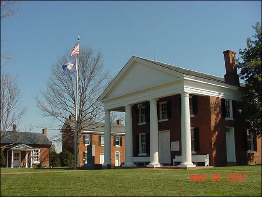
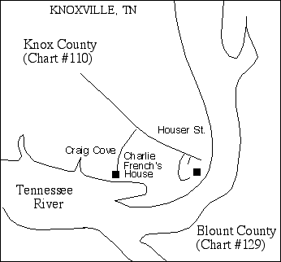

French Family Association
The Official Website of the Surname French

The first court in Goochland County Courthouse was held in May 1728. The location of the first courthouse was moved in the early 1800s to its current location along Rt. 522 in central Goochland, shown above.
Chart #110, William French, 1735
Goochland Co., Hanover Co., Louisa Co., and Henry Co., VA
Knox Co., TN
This chart updated by Mara French on 7/16/10. Numbers in brackets [ ] show the source material and refer to the bibliography at the end of this chart. An asterisk (*) shows continuation of that line. Send any corrections or additions to this chart to marafrench@mindspring.com. Revisions: 1999, 2010,
NOTE: Please make any corrections or additions to this chart that you can and send them to Mara. Refer to this chart by chart number and revision date so that your information will be understood. Refer to each family member by their number. Additions are greatly appreciated. This chart has been widely distributed and is constantly being updated. You will be notified of the next revision. This chart is still in draft stage. There is a lot more to add to it. FFA member Margaret Amundson believes this chart is connected to FFA Chart #36.
Harold Elmore and Rodney Smith have donated greatly to this
chart. We thank them for their time and effort.
Chart
110 Family Members, Anderson, IN
Chart
110 Family Members, Friendsville, TN
We have not found any data to indicate William was an immigrant. Since the English colony at Jamestown was established in 1607, Goochland County is only ca. 100 miles upstream and on the same James River, and settlement along this stream followed quite rapidly after Jamestown, there exists the possibility that this French family could have immigrated four or even five generations before this William. With diligent research, and a lot of luck, we may uncover another generation or two.
And so, with diligent research, we found that William French ties into FFA Chart #36, Fourth Generation, as follows [24]:
1. Hugh French, b. ca. 1650 in England
2. Mason French, b. ca. 1693 in Old Rappahannock, VA; d: 1746 in Westmoreland
Co, VA
3. Hugh French, b: 1715 in of St Mary's Parish, Richmond Co, VA; d: ABT
1771 in Prince William Co, VA, m. Margaret Gervase Jarvis
4. Daniel French, b: Aft. 1736 in Richmond Co, VA; d: ABT 1807 in
Adair Co, KY, m. Mildred Strother
4. William French, b: 1744; d: Bef. 1800, m. Rachael
Thomas Jefferson was born in 1743 in Shadwell, Goochland Co.
See FFA Chart #36.
The Fourth Generation shows William’s siblings.
4.1* William French, b. 1744, belonged to the Church of England, d. after 1820 in Henry Co., VA, m. ca. 1759, probably in Hanover Co., VA, to Rachel, and they had 5 children. William sold land in Goochland Co., VA, near where the son of Hugh and Margaret (Jarvis) French lived of FFA Chart #36 [6] between 1761-1778. Thereafter William and Rachel moved to Henry Co., VA, between 1779-1820+. He also owned land in Louisa Co., VA, near the Goochland border.
William’s wife’s name was Rachel at the time they sold their land in Goochland. There was a William Jr. and Sr. in Henry Co. There was also a Mason French in 1780 [6]. These could be the same persons on the Rockingham Co., NC 1790 census. Henry Co. is just north of Rockingham Co., NC [6]. Court cases are as follows:
20 Apr 1761--William French paid 60 pounds to William Parrish for a 200-acre tract on Lickinghole Creek, a tributary of the James River, in Goochland Co., VA.
3 Mar 1763--William French sold a 40-acre tract on Lickinghold Creek in Goochland Co., VA, to Tolly Parrish for 27 pounds, 10 shillings. Recorded 16 Aug 1763.
1 May 1765--William French paid Francis Smith and wife Elizabeth of Hanover County 70 pounds for a 109-acre tract on the Goochland and Louisa County border plus a separate 100-acre tract in Goochland Co., VA.
10 Jun 1765--William French and Rachel, his wife, recorded the sale for 45 pounds of a tract to William Rutherford in Goochland Co., VA.
1773--William French on the list of tithables in Trinity Parish (Louisa Co., VA). His paying only one tithe indicates his oldest son was not yet age 16 (Joseph was 13 in 1773).
19 Oct 1778--Rachel French the wife of Wm. French relinquished her right of dower to a tract in Goochland Co., VA.
Between 1778 and 1781--William’s first land purchase in Henry Co., VA.
3 Mar 1781--William French sold land in Henry Co., VA to Josiah Smith, and their children Joseph (French) and Judah (Smith) married. Josiah owned three farms in Henry County totaling ca. 1000 acres.
23 Nov 1782--William French signed a petition against division of Henry Co., VA.
2 Nov 1795--William French served on inventory committee for John Watson, deceased, Henry Co., VA.
3 Mar 1796--William French witnessed the will of Joseph Morris, Henry Co., VA.
24 Sep 1798--William French listed in an estate settlement for John Marr in Henry Co., VA.
1800--William French on Henry Co., VA tax list showing 1 white male titheable, 1 horse, 1 slave over age 16.
July Court 1819--William French listed in an estate settlement for John Beck, Henry Co., VA.
27 Feb 1820--William French listed in an estate sale for Henry Lyne.
Children of William and Rachel French, 4.1
5.1* Joseph French, b. Aug 1760 in Hanover Co., VA, was in the index to the 1800 census of SC, aged 60-70 in the 1830 census, raised in Goochland Co. and Louisa Co, VA, m. Judah Smith on 10 Jul 1782/83 in Henry Co., VA. Judah was from VA, the dau. of Josiah Smith and Elizabeth Collier of Henry Co., VA. Judah was b. ca. 1765 in Broad River, Union Co., SC, d. after 1834 or 1844 [1]. Joseph d. 24 Jan 1838 in Fentress Co., TN. Joseph and Judah had several children in York District, Union Co., SC; their last child was born in TN.
Joseph’s Military Duties:
In Henry Co., Joseph entered the Virginia Militia in the Revolutionary War. He marched from Henry Co. as a volunteer, although it was understood it should stand as a drafted tour, to the Moravian Town in NC, and then to another town of the Moravians and from there to the Shallow Ford of Yadkin. John Dillard was his captain and Abram Penn his colonel. As they marched to the Shallow Ford they met some few wounded coming from the Shallow Ford that had been wounded in a skirmish between Tories and Whigs. From thence they crossed and turned up the Yadkin in search of the Tories and crossed the Yadkin in various places and went to the Hollows of the Yadkin and marched to various places and finally returned home to Henry Co., VA. He was discharged for a three-month tour.
He was once before that occasionally called on to go against the Tories in NC under Capt. Shelton and Col. Hughes and was stationed about five weeks near the Hollows of the Yadkin, served about seven weeks, and was dismissed and went home.
He marched off again a third time under Lt. Peter Leke to guard Gen. Sumter’s wagons to SC as a dragoon and was put under Col. Hampton. He did not go on with the wagons through fear of the enemy and was finally discharged after being away from home a short time.
He was again called out agreeable to number and went into NC under his former Captain Dillard and marched to several places and finally was dismissed after serving a very few days.
Some time thereafter he was called out agreeable to enrollment and marched from Henry Co. under Capt. Rubel, stayed under him a few days, and was put under Capt. James Pertete and served under him the remainder of the tour. He was under Maj. Wallis. They marched to Petersburg and Cabin Point, then near old Jamestown, crossed James River at Swan’s Point, then to Williamsburg and finally to Yorktown. They joined the militia of Bedford Co. at Swan’s Point. When he arrived at Yorktown, he was under Col. Tucker. He was put to the most servile labor at Yorktown for many days and was badly strained in his right arm in carrying and throwing on a pole, something that they made of bush for the purpose of breast works. He has never been able to use his right arm. He was sick at Yorktown about the time of the surrender and after the surrender was discharged by Capt. James Pertete. He had two written discharges from Capt. Shelton and Capt. Pertete. These papers were lost.
After he returned home, he was recalled for service on several different occasions. He was assigned as a guard to General Sumpter’s wagons en route to South Carolina. He was at York about the time of the surrender of Lord Cornwallis on 19 Oct 1781. Joseph can prove most of his services by William May who lives some place in the Cherokee Nation near Hiwasee River, and the balance by John May, a brother of William. John May lives in the Hiwasee District.
Joseph moved to the York District in SC (where he had served during the war) for 9-10 years (or 19 years [6]), and then returned to Henry Co., VA for about one year. Joseph and Judah then moved to Knox Co., TN and Blount Co., TN for about 9 years. While in Knox Co., Joseph served as a Captain of the militia. They then moved to Overton Co., TN before 1807 to the part that is now Fentress Co. A deed dated 1813 indicates they were living in the Wolf River Valley, the far northeastern part of Fentress Co. However, the location of their final homestead (about 1829-1833) is described as a 600-acre tract on Big Hurricane Creek and on the south side of Marshbank’s turnpike (now locally called Campground Road). This is the southwestern corner of Fentress Co. about three miles west of Clarkrange. This tract was sold to Nathan Haggard on 16 Jan 1833.
Court Records:
1797 - Joseph in York Co., York Co. Minutes, 1786-1797.
1820 Census of Overton Co., TN, Joseph French 021101 00101.
5.2 Samuel French [2], b. ca. 1760 probably in Hanover Co., VA.
5.3* William French, b. 1761 [16] probably in Goochland Co., VA, m. Elizabeth [13] "Betsy" Abbington on 3 Jul 1783, probably in Botetourt Co., VA. Some years after his marriage (about 1807), they moved to Shelby Co., KY, from Botetourt Co., VA. In 1817 they moved to Shelby Co., KY (just east of Louisville). Their children were all born in VA. William d. 14 Feb 1851 and Elizabeth d. 27 Oct 1851, both in Shelby Co., KY. (Note: Peter French of Chart #129 also lived in Botetourt Co. at the same time. No connection yet. Chart #14 also has connections to Shelby Co., KY.) William was in the Rev. War [16].
5.4 John French, b. ca. 1766 probably in Goochland Co., VA, m. Cox [2]
5.5 Rebecca French, b. ca. 1768 probably in Goochland Co., VA, m. John Garner, d. in Madison Co., AL [2].
5.6* William French [27]; however, Ref [33] has not found any baptism records about him to connect him to John and Maria Barbara, and more significantly, he is not mentioned in the probate of John’s estate in 1787, but then, he was not of age. However, land grants prove he was Peter’s brother [30], listed in Botetourt Co. Personal Property Records in 1809 [30]. He removed to Roane County, TN, after 1811 where he was a minister [30] [32]. This may be the William who was on the Knox Co. TN tax lists from 1807-1812. The first record of William in Rhea County is his being called and serving as a juror for the April session of the 1810 Quarterly Court [26]. He was often called as a juror over the next decade and always served until the March session of 1820, when he was fined $25 for nonappearance. This was shortly before the time of his death. His will was executed 2 Oct 1820 and probated Feb 1821. He left six minor children and his wife at his death. He bought a large farm ca.1000 acres in the Richland Creek Valley, including what is today a substantial part of Dayton, TN, the county seat [26]. The original acquisition deed has not yet been found. Several disposal deeds are available [26]. In addition to his farming, he operated a mill on Richland Creek. William m. Elizabeth “Betsy” (perhaps Harvey or Baxter) and the 1850 census indicates she was born in Virginia ca. 1777 [26].
William and Elizabeth French made their way from Virginia to Rhea County at an early date. William French was on the Rhea County Jury as early as 1809. He was one of the purchasers at the sale of the estate of Daniel Kennedy in 1810 -- buying $8.50 worth of items, a pot, crocks and a jug. William French acquires some 500 acres, including land “lying below the main valley road and next to Big Richland Creek.” He had a mill on the creek. A number of slaves helped operate his plantation. The site was where the town of Dayton was later established. However, French died in 1821, leaving a widow to raise five sons and a daughter [31].
French traded from a row of one story brick buildings at the wharf. French who was “very precise in business” prospered and was able to occupy a large brick house in a grove. It was above Walnut Street and faced Seventh Street in the direction of Lookout Mountain [31]. (I hope I have this information is in the correct place. It was hard to tell from the article, which French they were talking about).
The French family cemetery has been located on the quadrangle map, but one report indicates all markers are unreadable [26]. He was buried in the French Cemetery on a high hill to the rear of the Rhea County Courthouse [31].
(Note: This William may be the William who was on the Knox Co. TN tax lists from 1807-1812.)
The last Will and Testament of William French was presented and proved by oath of William Smith, one of the subscribing witnesses. William Smith and James Cowan, exrs named in Will of William French, late of Rhea Co., appeared in Court and were sworn. The Exrs exhibited the following inventory: a Bond on William Lyon for a Deed to 500 acres of land, the place whereon said French lived, consideration expressed $4000 – Note, if less than 500 acres said Lyon to deduct at $8 per acre. We presume there is less the amount of Sale by the Exrs on the 14 Dec last 12 mos credit $713.32 1/2. Note given by Geo Maines payable 25 Dec 1821 in a horce and corn $100. Note given by same payable 25 Dec 1822 in wheat, rye, cattle, hobs, and sheep for $75. Note given by Thos Howel due 1 Mar last for $130, credited by $25, balance $105. Note given by John Leuty payable 1 Dec 1816 for $23.69. Note given by Jas Carter payable 1 Sep 1815 for $16.66. Note given by William Alexander payable 6 Oct last for $9.17 1/2. Note given by Moses Roddy payable 28 Dec 1815 for $10. A certificate for 3 days attendance as a juror Sept Term 1816 Circuit Court $1.50. Total, $5054.34 3/4.
May 1821 -- The last Will and Testament of William French was again exhibited in Court and proved by oath of Elizabeth Smith, the other witness. Will . . . sale of personal property to pay any debts . . . my wife, Betsy French, be permitted to purchase such articles as may be necessary for the family . . . if sale not sufficient to pay debts, then land lying below the main valley road and next to Big Richland Creek to be sold . . . my Negro girl Mimna to my wife during her natural life; my little Negro girl named Harriett . . . to my daughter Betsy Ann French, my Negro man and boy both named Joe shall remain with and labor for the support of my wife and family until the family are raised. It is my desire that my wife and children continue to live on my plantation until they are all of age, “Because I think it will conduce to the health of my family, it is my desire that they live on that part of my plantation that Charity Dunham now occupies and that they erect there at such cabbins as will render them comfortable.” When all the children become of age . . . my plantation and Negroes to be sold . . . proceeds to wife during her natural life and the residue to be divided among my surviving children . . . James Cowan and William Smith to be Exrs . . . 2 Oct 1820. Witness: William Smith, Elizabeth Smith. This may be the line of Harold Lane Elmore.
In 1822, Thomas N. Clark of Roane County bought 100 acres of the French place for $200. It was on the East Fork of Richland Creek [31].
5.7 Thomas French, b. after 1769, listed in Botetourt Co. Personal Property Records in 1812 [30]. During the War of 1812 the Botetourt County Court House was burned and most of the records were destroyed.
5.8 Marshall French.
Children of Joseph and Juda (Smith) French 5.1. They had 10 children.
6.1 William French, b. 15 Jun 1783 in Henry Co., VA, m. Polly Clift [2]. He was of Knox Co., TN and on the tax lists 1807-1812 [3]. William lived in Clear Creek on 13 Sep 1852 and Hurricane Creek on 5 Nov 1872 [14].
6.2* Josiah French, b. ca. 1785 in Henry Co., VA, lived in Knox Co. TN, on tax lists 1826-1829, d. 1829, m. Sarah “Sallie” Latham [2] ca. 1805, dau. of Andrew Latham of York Co., SC. Joseph’s ancestors lived in Western Knox Co., TN, ca. 1800-1850 and moved to Western Blount Co., TN before 1860. Josiah didn’t own any land. As an adult male, he had to pay poll tax [4]. Josiah worked for the Bearden family in West Knoxville. You can reach the house that is thought to be the Bearden house by going along Blue Grass Lake going East on Northshore Drive, then on to Wright’s Ferry Rd., then right on Badgett Rd. near the Knoxville Boat Club. On the shore is the land where Josiah worked for the Beardens. The old clapboard house with logs underneath was probably the Bearden house [4]. Sarah is listed as head of household in the 1830 census with ten children. While Josiah’s parents moved on westward, Josiah and Sallie settled down in western Knox Co., TN to raise their large family [3].
6.3 Thomas French, b. ca. 1787 in York District, Union Co., SC, m. Bettie Smith [2]. Thomas is on Knox Co., TN tax list in 1812 [3].
Court Records:
1820 Census Overton Co., TN, Thomas French 00010 20100 (Thomas aged ca. 33).
6.4 John French, b. ca. 1791 in York District, Union Co., SC, m. Penny Smith [2].
6.5 Gideon French, b. ca. 1793 in York District, Union Co., SC between 1800-1810, m. Fanny Mathis [2]. Lived in McMinn Co. in 1830 with his wife and two young daughters [5]. In 1820, Gideon may be the same person mentioned in FFA Chart #40 living in Stewart Co., TN – this needs to be researched.
6.6 Samuel C. (Collier?) French, b. after 1795 perhaps in York District, Union Co., SC, m. Fanny Mathis [2]. Samuel had 46 acres at Hurricane Creek East Fork, Overton Co., TN, on 3 Jul 1824 [14]. In 1820, Samuel C. may be the same person mentioned in FFA Chart #40 living in Stewart Co., TN – this needs to be researched.
6.7 Rebecca Coleman French, b. after 1795 perhaps in 1798 in York District, Union Co., SC. On 27 May 1833 Rebecca had 300 acres of land at Clear Fork, French’s Fork, including 100 acre entry made by her brother, Martin French, which was thought to be in Morgan Co. before the line was run [14]. Her land grants totaled 420 acres dated 1836 and 1837. She was ca. 39 in 1837 and apparently unmarried.
6.8 Margaret “Peggy” Morris French, b. after 1797 perhaps in 1800 in York District, Union Co., SC, died after 1860 in IL or TN, m. ca. 1820 to Thomas Smith [2].
6.9 Polly Booker French, b. ca. 1802 in York District, Union Co., SC, m. Charles Robertson [2].
6.10* Martin Luther French (the youngest child), b. 6 Jan 1807 in Overton Co., TN, m. Judah Bowman on 1 Jan 1829 in Fentress Co., TN, d. 11 Nov 1898 in Overton Co., TN. Judah was b. 22 May 1807 in TN, d. 30 Apr 1882 in Overton Co. Both Martin and Judah are buried at the French Mountain Cemetery just outside Livingston in Overton Co., TN [1]. The cemetery is behind the house that Martin built in 1829. The cemetery has 12 stones, all have headstones except for General Thomas French who died before his father died, John C. French, who was Martin’s son [2]. Judah was b. 22 May 1807 in TN, the dau. of Josiah Bowman. She d. 30 apr 1883 in Overton Co., TN. The family cemetery is located on top of the mountain. There are numerous graves there (about 12) including those of Martin Luther and Judah [8].
The Frenches were merchants and farmers and travelled the Cumberland River by raft to Nashville to purchase merchandise [8]. Martin Luther has been described as a “high-faluting Englishman.” During his adult life, he required his table to be set with white linen tablecloths and napkins. If his wife and daughters had washed all of them in one day, he insisted that one be clean and dry before he had his dinner. Martin must have been quite a wealthy man. His home was very nice for the time. He had quite a bit of fine china and crystal that was in daily use. His home was located in an area of Overton County known as French Mountain. It seems that Martin Luther and his family moved there sometime around 1835 and he or his descendants have lived there into the 1900’s [8]. The family cemetery is located on top of the mountain. There are numerous graves there (about 12) including those of Martin Luther and Judah [8].
Martin owned 100 acres on Livingston Rd. on 12 Oct 1827 he owned 311 acres on the west side of Big Hurricane Creek including cave spring which had 100 acres [14]. He received a 100-acre land grant in Fentress Co., TN in 1835, was taxed on 50 acres in Fentress Co. in 1872.
Court Records:
1840 Census, Overton Co., TN
Martin 001001-220001:
0-5
5-10
10-15
15-20
20-30
30-40
40-50
1850 Overton Co. Census:
Martin, 44, m., TN
Judea, 43, f, TN
Josiah, 20, m, TN, farmer
Narcissa, 17, f, TN
Martha, 15, f, TN
Polly, 13, f, TN
Elizabeth, 10, f, TN
Gideon, 9, m, TN
Rebecca, 7, f, TN
Samuel, 5, m, TN
Margaret, 2, f, TN
1880 Overton Co., Census
J.C.L., 26, m
M.J., 21, f
J.B.M., 4, m
A.A, 5/12, m
Josiah C. 50
Sarah C.C. 53
Judie V. 20
Kennedy L. 24
Elizar 23
Fred 3
M. L. 73, m
Judah, 73
N. P. 48, f
R. C. 36, f
M. M., 32, f
Children in William and Elizabeth French, 5.3
6.11* John French, b. ca. 1790, was a local preacher in the Protestant Methodist Church in Baltimore, MD, and an umbrella maker by trade [13].
6.12* Thomas French, b. ca. 1792, settled in Northern Alabama [13].
6.13 Jefferson French, b. ca. 1794, killed in Shelby Co., KY, by the falling of a tree. He had just reached his maturity [13].
6.14* Samuel C. (Collier?) French, b. 1771, d. 23 Aug 1860, m. Mrs. Susannah Duvall Edwards Shouse in 1822 [13]. Susannah was b. in VA in 1794, d. Nov 1864 in Shelby Co., KY [13]. Susannah m1. Joseph Edwards in 1814 and had one son, Thomas D., 8 Apr 1815. He d. near Simpsonville, KY on 6 Mar 1871. Susannah m2. Thomas Shouse in 1818. To them was born one son, Dudley J. 30 May 1819. He d. at Sulphur, KY, on 5 Dec 1905. Susannah m3. Samuel C. French in 1822. To them were born three children [3].
6.15* William N. French, b. 1800, m. Catherine Courtenay, lived many years in Shelby Co., KY and d. at the age of 55 years in 1855 [13].
6.16 Margaret “Peggy” French, m. Tunis Miller. She moved to Ohio and died, leaving two daughters [13].
6.17 Mary “Polly” French, m. James Bayne, son of George Bayne. She d. at her home in Shelby Co., KY, leaving four sons and one dau [13].
6.18 Nancy French, never married. She died in Kansas [13].
6.19 Betsy French, m. Thomas Beatty. She moved to Missouri and died there, leaving two daughters [13].
6.20 Rebecca French, m. Joseph McDowell. She died at her home in Kansas, leaving no children [13].
Children of William and Elizabeth (Harvey or Baxter) French, 5.6
6.22* Joseph Harvey French, b. 2 Jul 1807 perhaps in VA, one report is that he was in the Confederate Amy and died in one of the battles at Chattanooga and is buried at the old Confederate cemetery east of Chattanooga. He m. 18 May 1831 in Rhea Co., TN, Nancy Benson (or Benton [31]). They were listed, along with his mother, as living on the Rhea County family farm in the 1850 census. They had seven children. Joseph Harvey is listed in several sources as Joseph Harrison. He did have a son named Joseph Harrison [26]. He was 13 at his father’s death. Nancy Benson French had died in 1840 and Joseph Harvey French passed away in the 1850s. Their youngest son, Joseph Harrison, came to live with John L. M. French family which included son, William.
6.23 Timothy Fletcher French, b. 3 Jul 1810 in TN. The same source as above indicated he also served as a Confederate soldier, and shared the same fate and burial site as his brother, Joseph [26]. He was 10 at his father’s death.
6.24* William Baxter French, b. 16 Aug 1812, Rhea Co., TN, d. 1874 in Knoxville, Knox Co., TN, m1. Isabella Hervey or Harvey White, daughter of Hugh Larson White, b. 19 Feb 1820, and the great grand-daughter of General James White, founder of Knoxville and political leader in the State of Franklin, Territory South of the Ohio and establishment of the state of Tennessee; grand-daughter of Hugh Lawson White, U.S. Senator and candidate for U.S. President who list to Andrew Jackson. William m2. 7 May 1851 in Knox Co., TN, to M.E. (Lissie) Crozier, b. 7 May 1851, d. 14 May 1926, grand-daughter of the first Knoxville postmaster, daughter of the U.S. congressman. Widowed at age 23 (William died after only two years of marriage), she became an ardent feminist. Lizzie was a most effective organizer of causes for women and children, and had a pivotal role in Tennessee being the state to last ratify the 19th Amendment. William Baxter had a nephew with his identical name [3]. He was 8 at his father’s death.
Lissie French became the pioneer advocate of woman suffrage in Tennessee and for 40 years labored for this cause, which was achieved in 1920. For five years, from 1885 to 1890, she, with her sisters, Lucy Graham Crozier and Mary Hume Crozier, conducted a successful school “for Young Ladies and Children” at the East Tennessee Female Institute buildings on the corner of Main Avenue and Henley Street. Public speaking, or elocution, was a prominent and popular subject taught at the Institute. Lissie was a gifted speaker and author of “A Manual of Elocution,” published in 1887. In the same year that her school was organized, Lissie founded the Ossoli Circle, the City’s eminent literary society. In 1896 she founded the “Woman’s Educational and Industrial Union,” but the membership of that organization was gradually merged inito other societies. The Union, however, influenced the establishment of the office of police matron in Knoxville. About 1911, she organized the “Writers’ Club”, which became the Knoxville Branch of the “League of American Penwomen.” She was president of the Tennessee Federation of Women’s Clubs, 1910-1912. She supported every cause that had for its object the betterment of the community. She served as an officer of the state parent-teachers organization. She was a member of St. John’s Episcopal church but, in her latter years, attended the Unitarian church, preferring its more liberal views. She was elected president of the Tennessee Suffrage Association. She had an “Address on Woman’s Rights,” published in the Proceedings of the Bar Association of Tennessee, 1912. Finally in August 1920, the amendment to the United States constitution which granted the suffrage to women was ratified. In November she cast her first vote. The local League of Women Voters came into being at this time. In 1923, she was an unsuccessful candidate for city councilman. The Ossoli Circle placed a portrait of Lissie French in the Tennessee room in the headquarters of the National Women’s party, WDC. At the time of her death, she had gone to Washington to secure introduction of a bill in Congress that would be of benefit to working women and also to assist with plans for the furnishing of a room in the National Woman’s Party Building that was a project of the women of Tennessee.
6.25 Allen Law French, b. 17 Nov 1814, d. 31 Dec 1846, buried at the First Presbyterian Church cemetery, Knoxville, Knox Co., TN [3]. He was 6 at his father’s death.
6.26 John Lee McCarty French, b. 18 Jan 1817, m. 7 Nov 1850, Catherine Ann King Findley or Findlay [31], the daughter of Alexander Findlay of Abington, VA [31]. John was a prominent Chattanooga grain dealer, whose home was on the present site of the Hamilton County (TN) courthouse in what is now downtown Chattanooga. A nephew with the same name lived with them for some time [3]. He was 3 at his father’s death. John Lee McCarty French was “a genial pleasant gentleman” who was one of the commission merchants at the wharf, when Ross's landing was the city's commercial center. His fine home was on the block where the County Courthouse now stands. Three of his nephews fell in the fighting at Chickamauga [31].
6.27 Elizabeth Ann “Betsy Ann” French, b. 25 Mar 1819 [3]. She was born just before her father’s death and is mentioned in her father’s will.
Children of Josiah and Sarah (Latham) French, 6.2. They had 10 children.
7.1 Female 20-30 in 1830 [5], b. ca. 1807.
7.2 Female 20-30 in 1830 [5], b. ca. 1809.
7.3 Male 15-20 in 1830 [5], b. ca. 1811.
7.4* Joseph French (?), b. 1813, m. 3 Dec 1833 in Blount Co., TN to Sarah Casteel, dau. of Benjamin Casteel.
7.5 Female 10-15 in 1830 [5], b. ca. 1815.
7.6 Female 10-15 in 1830 [5], b. ca. 1817.
7.7* Andrew French, b. 18 Mar 1819 in Knox Co., TN, d. 19 Apr 1900, buried at the Shady Grove Cemetery in Blount Co., TN.
5131-10. Shady Grove Cemetery, Blount Co., TN. Andrew, husband of Mary French, born Mar. 18, 1819, died Apr. 19, 1900. Photo taken in Jun 1995.
Andrew m. 24 Mar 1842, Knox Co., TN, Mary C. “Polly” Moor, perhaps dau. of Messe Moor, b. 10 Aug 1825, d. 28 Feb 1899, buried at the Shady Grove Cemetery, Blount Co., TN.
5131-11. Shady Grove Cemetery, Blount Co., TN. Mary C. Moor, wife of Andrew French, born Aug. 10, 1825, died Feb. 28, 1899. Photo taken in Jun 1995.
They lived in western Knox Co., TN from the time of their wedding until 1859 when they moved a few miles south to Blount County and bought a ridgetop farm at Dug Gap, on the road from Louisville to Middle Settlements. They lived in a log cabin (see location in data about his son, Wright French). It is said to be still standing near a large spring. They attended the Cumberland Presbyterian Church at nearby Miser Station.
5131-9. Miser Station Rd., Cumberland Presbyterian Church, Blount Co., TN. It has two doors, one for men, one for women. Photo taken in Jun 1995.
In later years, it was discovered that the back part of the French farm contained a large deposit of Tennessee Pink Marble of especially high quality. A quarry was opened, an L&N rail siding was installed and this attractive building stone (called French Pink in the trade) was shipped throughout the country. Tradition has it that much of the stone for the National Gallery of Art in Washington came from the French quarry [3]. The Tennessee Railroad took tons of French’s Pink Rock from Louisville to Nashville [4].
7.8 Charles (Charlie) French (?), owned all land on Duncan Rd. off Badgett Rd. at the Duncan Boat Dock. He bought the land from the Badgett family, then sold it to the Tennessee Valley Authority (TVA). House was at Craig Cove right (end), owned house overlooking cover (water) on Brown Atkins Rd. Charlie owned the entire peninsula.

7.9 Female 10-15 in 1830 [5], b. ca. 1821.
7.10 Female 5-10 in 1830 [5], b. ca. 1823.
7.11 Female 5-10 in 1830 [5], b. ca. 1825.
Children of Martin and Judah (Bowman) French, 6.10. They had 10 children.
7.12* Josiah Carroll French (first born), b. 14 Oct 1829 in Fentress Co., TN, m. Sarah Cole Carlisle Pool on 18 Nov 1852 at Livingston, Overton Co., TN, d. 3 Apr 1897 or 19 Apr 1896 [8] in Overton Co., TN and is buried at the Monroe Cemetery in Monroe, Overton Co., TN. Sarah was b. 25 Oct 1825, d. 19 Apr 1896. She was the dau. of Dr. Patrick (b. 22 Oct 1771, d. 26 Mar 1848, aged 70 years, 5 mo., buried at the Cash Cemetery) and Nancy Carlisle (Vickhouse) Pool (b. 18 Oct 1792, d. 4 Nov 1847 buried at the Cash Cemetery in Livingston, TN, far right back side of cemetery). Dr. Pool was an immigrant from Ireland who resided in Poss, NC [1]. When Josiah was a small child, the family moved to Overton Co. where he spent the rest of his life. He was a school teacher in Overton Co. He also had a mercantile business and lumber business with his son-in-law, Burr Cullom. Due to the bankruptcy of the wholesale business, the lumber business of French and Cullom failed [8].
7.13 Narcissa P. French (N.P.), b. 25 Jan 1832 in Overton Co., TN, d. 10 Feb 1913 in TN [2]. She was engaged to a boy who was killed in the Civil War. She never married [8].
7.14 Martha Ann French, b. 9 Feb 1834 in TN, m1. Alfred C. Ramsey on 26 May 1855, d. 22 Dec 1921 [2]. They had 4 children: Arrilla, Washington, Benjamin, and Sarah [2]. Martha m2. Solomon Allred on 17 Feb 1867 in Overton TN. He was b. 31 Oct 1848. They had 4 children: Josiah, William, Moses, and Tim [2].
7.15 Mary Booker “Polly” French, b. 26 Apr 1836 in TN, m. Rev. William C. Cantrell on 12 Mar 1857, d. 26 Nov 1917 in Overton Co., TN and was buried 2 days later at the Shiloh Cemetery, Overton Co., TN [2]. William was b. 17 Mar 1836 in NC, d. 17 Nov 1911 in Quarls, Overton Co., TN and is buried at the Shiloh Cemetery, Overton, TN. They had 8 children: India, Ruth, Louisa, Mary, Timothy, A., M. Penther, and J. Cass [2].
7.16 Elizabeth C. French, b. 9 Mar 1839 in TN, m. W. Jason Ramsey on 26 Apr 1857, d. 1 Apr 1932 in Overton, TN and was buried the next day at the Falling Springs Cemetery in Overton, TN [2]. They had 9 children: Winiford, Narcissa, Margaret, Mary, Rebecca, Amon, R.R.P., J.V., and M. [2]
7.17 Gideon T. French, b. 1 Jan 1841 in TN, d. 15 Jun 1863, m. Tennessee Speck on 30 Oct 1862 [2]. He fought in the Civil War for the Confederacy and was killed. Many other boys in the area were killed, especially at the Battle of Ravenscliff, nearby. Following one battle, the Confederate soldiers were left dead in the field. Late that night, Martin Luther, Gideon’s father, and his sisters took a cart and brought the boys back and prepared them for burial. One day some Union soldiers came to the French home. They destroyed many things and walked with muddy boots on the white bed clothes. When they left, they took the mare that belonged to Rebecca. This mare was her favorite, but her father had a broken hip and the soldiers would have killed him if he protested. When they left, they went down the main path on the mountain. Rebecca knew a shortcut to the bottom and she took it. She met them at the bottom and demanded her mare back. The soldiers said that they didn’t take the mare, and that the mare had followed them. Even so, they returned the mare to Rebecca [8].
7.18 Rebecca Coleman French (R.C.), b. 16 May 1843 in TN, d. 14 Jan 1933, m. 25 Nov 1890 in Overton, TN to John Will Poston [2]. Rebecca had a mare (refer to Rebecca’s brother, Gideon).
7.19 Samuel W. French, b. 16 Feb 1846 in TN, d. at almost 5 yrs old on 17 Dec 1850 in TN [2]. He had scarlet fever and was the only child who died young [8].
7.20 Margaret “Peggy” Morris (M.M.) French, b. 26 Apr 1848 in TN, d. 28 Feb 1919 in Overton Co., TN was buried two days later at the Hill-French Cemetery on French Mountain, Overton Co., TN, m. 18 Feb 1883 to Louis Mattison (Madison) Hill [2]. Louis was b. 6 Apr 1848, d. 29/30 Aug 1928 in Overton Co., TN and is buried at the Hill-French Cemetery on French Mountain in Overton Co., TN. They had 4 children: Josiah “Joe” Thomas Hill (b. 28 Feb 1884, d. 30 Apr 1970) [8], John, Narcissa, and Irving [2]. The Hill family lived in the house built by Martin French in Overton Co. on top of French Mt. until the 1950s. In 1994 the house was deserted. The Hill family lived at the bottom of the hill [2]. Ernest Hill, volunteer at Mortuary House, still living in Livingston, 1995, the grandson of Margaret and Louis Hill [4].
7.21* John Calvin Luther “Cal” French [1], b. 1 Aug 1853 in Overton Co., TN, m. Margaret Jane Vaughn on 18 Feb 1875 in Overton Co., TN. They had 11 children [2]. John, d. 27 Aug 1931 in Overton Co., TN, and is buried at the Falling Springs Cemetery in Overton. Cal didn’t want to be buried there, but he was buried before his family had time to voice their opinion [7]. Several years before his death he lived in a house for the poor [2]. Margaret was b. 5 Jun 1858 in Overton, TN, the dau. of Arter A. and Malicia (Bilbrey) Vaughn. She d. 31 Mar 1940 and was buried 1 Apr 1940 at the White Cemetery in Overton Co., TN [2].
Children of John French, 3.11
7.22 son French [13].
7.23 son French [13].
Children of Thomas French, 3.12
7.24 son French [13].
7.25 son French [13].
Children of Samuel Susannah (Duvall Shouse) French, 3.14
7.26 Elizabeth Margaret French, b. 15 Dec 1822 in Shelby Co., KY, d. 9 Nov 1833, aged 11 months. Twenty days elapsed between the death of Elizabeth and her brother [13].
7.27 William Holman French, b. 1 Oct 1826 in Shelby Co., KY, d. 29 Nov 1833, aged 7 years. Twenty days elapsed between the death of William and his sister [13].
7.28* Francis Carpenter French, b. 5 Mar 1831 in Shelby Co., KY, m. Martha A. Byars on 3 Oct 1854 in Shelby Co., KY, by Rev. George W. Merritt [13]. Martha d. 5 Jan 1865 [13]. Francis joined the M. E. Church South near Boston, Jefferson Co., KY on Sep 1853, during a protracted meeting conducted by Revs. Drummond Welburn and Jonathan Dale. He was elected steward July 1854 of Simpsonville Church and served continuously for 50 years in that office. He was always an advocate of temperance, having taken the pledge in 1850 and kept it faithfully all his life.
Children of William and Catherine (Courtenay) French, 3.15
7.29 James W. French [13].
7.30 Robert C. French [13].
7.31 Martha French, m. Crosby [13].
Children of William Harvey and Nancy (Benson) French, 3.24
7.32 James Madison French, b. 27 Jun 1828 [3].
7.33 William Baxter French, II, b. 22 May 1831 [3].
7.34 Elizabeth (Betsy) Ann French, b. 2 Feb 1833 [3].
7.35 Byron Brownlow French, b. 2 Dec 1834 [3]. Fought at the Battle of Chickamauga, TN. See next brother [31].
7.36 Timothy Allen French, b. 2 Jun 1837 [3]. Fought at the Battle of Chickamauga, TN. See next brother [31]. Timothy Allen French had been married just prior to the war to Catherine Orr [31].
7.37* John Lee McCarty French, II, (Methodist Minister), b. 19 Nov 1838, m1. Mary Ann Elizabeth Stewart, dau. of Rev. George and Catherine (Elliott) Stewart from County Tyrone, Ireland. They had three children [3]. He m2. Catherine E. [31].
John Lee McCarty French was “a genial pleasant gentleman” who was one of the commission merchants at the wharf, when Ross's landing was the city's commercial center. His fine home was on the block where the County Courthouse now stands. Three of his nephews fell in the fighting at Chickamauga [31].
John L. M. French had a religious conversion in a revival in Chattanooga in 1858. He became a Methodist minister, pastoring churched at Cleveland and elsewhere. Of his term of leading the reorganization of the Charleston Methodist Church in 1868, Dr. David Sullins said he was “a superior pastor and a better preacher no people ever had.” At the time of the war, three orphan nephews of John L. M. French joined the Confederate forces, including Joseph Harrison who was in Co., A of the Fourteenth Tennessee Cavalry along with many other Chattanoogans [31].
At the Battle of Chickamauga he fought along side his older brothers, Byron Brownlow French and Timothy Allen French. Two brothers died on the Chickamauga battlefield and Byron Brownlow French was wounded and later died. The French brothers were buried at the Confederate Cemetery in Chattanooga [31].
Due to the war, John L. M. French lost his fine property. However, the house survived and Federal authorities allowed Mrs. Reese Brabson to stay there temporarily while her home nearby remained occupied [31].
At the time of the 1880 census, John L. M. French was a boarder with Moses Wells at Second and High. French was then working as a clerk on a steamboat. Moses Well in 1860 had taken Catherine E. French as his second wife. She died in 1778 [31].
Their son, the Rev. John Stewart French, resided in Bristol, TN [31].
7.38 Joseph Harrison French, b. 1 Oct 1840 [3]. Joseph Harrison, came to live with his uncle John L. M. French when Joseph’s parent’s died [31].
Children of William B. and Lizzie (Crozier) French, 3.24
7.39 William W. French, b. ca. 1873, whose father died shortly after he was born. William was the head of a hardware firm in Birmingham, Alabama.
Children of Joseph and Sarah (Casteel) French, 7.4
8.1 Malissa A. French, b. 1836 [3].
8.2 Andrew T. French, b. 1841 [3].
8.3 Cascinda French, b. 1845 [3].
Children of Andrew and Mary (Moor) French, 7.7
8.4 Sarah Ann French, b. 25 Sep 1843, Knox Co., TN, d. 7 Jan 1924, bur. Shady Grove Cemetery, Blount Co., TN [3].
8.5 Elbert P. French, b. 6 Jul 1845, Knox Co., TN, d. 12 May 1920, bur. Shady Grove Cemetery, Blount Co., TN [3].
5131-12. Shady Grove Cemetery, Blount Co., TN, next to the Shady Grove Baptist Church, 1995 Shady Grove Rd., Sevierville, TN. FFA member Harold L. Elmore standing in front of tombstones of Andrew French (5131-10) and Elbert P. French, July 6, 1845 - May 12, 1920. Photo taken in Jun 1995.
8.6* Wright R. French, b. 29 Sep 1848, Knox Co., TN, d. 30 Oct 1930, Blount Co., TN, bur. Middlesettlements Methodist Church Cemetery in Blount Co., TN, off Union Grove Rd. at 351 Miser Station Rd., Louisville, TN., m1. 13 Aug 1868, Blount Co., TN, Sarah Mills Stanfield (widow) [3]. She was b. 23 Jun 1831, d. 28 Jun 1890, buried at Friends Church Cemetery in Friendsville, Blount Co., TN.
Wright joined the Union Army, 13th Tennessee Volunteer Cavalry [19] at Greeneville, TN at age 15 and served until the end of the Civil War in northeast TN, VA, NC, SC, and GA [20].
In 1882 Wright and Sarah moved to MI, selling all their household goods, and returned very soon to Blount Co., TN, and moved in with Wright’s parents. By 1900 both parents and Sarah had died.
Wright m2. Cordella Hord, b. 27 Oct 1871 (a very young bride who was a year younger than his daughter, Lida). To accommodate their rapidly expanding family (they had seven children), Wright and Cordelia built a two-story farmhouse which still stands on the ridgetop above his parent’s home. The French farm is now owned by Patrick Jones, who raises cattle and shows horses. The farmhouse is currently operated as rental property [3]. Cordelia Hord d. 1919 [23].
Wright’s house was on Topside Rd. in Blount Co., TN on the way to Louisville, TN. You pass Fort Lauden Lake, continue on the Louisville-Friendsville Rd. or Hwy 333 onto Dug Gap and turn left. On the ridge on top was French land on McDonald’s Rd. right to top. (3 photos of house). The road to the right of the house goes down to Andrew’s log cabin [4].
5132-21. Home of Wright French. House where FFA member Harold L. Elmore was raised when he was about 10, about 1933. Photo taken in Jun 1995.
Wright d. 22 May 1929 is buried at Middlesettlements Methodist Church Cemetery, Blount Co., TN.
5131-4. Union Grove Rd., Middlesettlements United Methodist Church Cemetery off Union Grove Rd. at 351 Miser Station Rd., Louisville, TN. W. R. French, born Sept. 29, 1848, died Oct 30, 1930, Served in United States Service, Company H, Tenn. Cavalry and his wife Cordelia French, b. Oct. 27, 1871, died May 22, 1920. Photo taken in Jun 1995.
Other Frenches in Friendsville, TN:
French A J, 919 Lane Dr, Friendsville, TN, 37737-2829, 615-995-9186.
French Clyde, 947 Lane Dr, Friendsville, TN, 37737-2829, 615-995-2588.
French Jack W, Friendship, TN, 38034, 901-656-2331.
French Jay P, 518 W Vinegar Valley Rd, Friendsville, TN, 37737-2420.
French John Jr, 108 E 3rd Ave, Friendsville, TN, 37737-2746, 615-995-2626.
French Larry D, 923 Lane Dr, Friendsville, TN, 37737-2829, 615-995-9712.
French Oscar L Jr, 4372 Vinegar Valley Rd, Friendsville, TN, 37737-2424, 615-995-2473.
French Sherman A, 142 Hamil Rd, Friendsville, TN, 37737-2238, 615-995-2546.
French Wayne, Friendship, TN, 38034, 901-677-2688.
8.6 Colonel M. French, b. ca. 1852, m. 19 Sep 1878, Blount Co., TN. to Mary M. M. Beales [3].
8.7 John French, b. ca. 1854 [3].
8.8 Marcus French, b. ca. 1858, m. 15 Aug 1878, Blount Co., TN, to Mary [3].
8.9 Mary J. French, b. ca. 1860, m. 12 Aug 1880, Blount Co., TN, George F. Beales [3].
8.10 Pleasant E. French, b. 8 Mar 1863, Blount Co., TN, d. 27 Jun 1938, buried at the Shady Grove Cemetery in Blount Co., TN [3].
8.11 Lucy B. French, b. ca. 1867, m. ca. 1925 when Lucy was near 60. Lucy lived on the road between Miser Station and the L&N railway [3].
Children of Josiah and Sarah (Pool) French, 7.12
8.12 Martha Winifred (Winnie) French, b. 22 Aug 1853 in Monroe, Overton Co., TN, d. 16 Mar 1927 in Nashville, Davidson Co., TN, and was buried 18 Mar 1927 at Mt. Olivet Cemetery in Davidson Co., TN. She m. Burr Cullom on 20 Jan 1870 in Monroe, Overton Co., TN [2]. Burr was the Editor of the Tennessee Legionnaire.
8.13* Kennedy Luther (K.L.) French, b. 7 Feb 1856 in the Eagle Creek Community in Monroe, Overton Co., TN, m. Eliza Gillentine on 7 Sep 1876. He d. 2 Mar 1947 (age 91) in Livingston, Overton Co., TN, and was buried the next day at the Good Hope Cemetery, Overton Co., TN. He was a member of the Methodist Church and the Masonry in the Upper Cumberland section and was honored with a Grand Lodge citation that recognized his 50 years of service. He was a rural route carrier for 25 years and operated a feed store for a number of years before his retirement. Eliza was b. 14 May 1856, the dau. of William Lewis (1832-1891) and Sara Ilem (Jett) (b. 1831) Gillentine. Eliza d. 16 Mar 1935 in Livingston, Overton Co., TN [1]. K.L. moved his family to Livingston near the turn of the century and bought a house from Dr. W. M. Creeding on 4 Nov 1905. The house was then known as the Dr. Colquette House [8]. The house still exists in 1995 on the main road south as you leave Livingston and is being renovated by Carl French Ledbetter, a great grandson of K.L. French [4]. K. L. was a rural mail carrier until his retirement. He delivered the mail on horseback and never owned an automobile. He belonged to the Livingston Masonic Lodge No. 259 and travelled by horseback to distant Masonic meetings whenever possible [8]. K.L. had a vivid memory until his death and could tell the birthdate of all his children, grandchildren, and great-grandchildren and the kind of day it was when each was born. He was 91 years when he died and could read and write without his glasses and loved to tell stories about his friends and family [8]. Eliza was a small, frail woman but sharp in mind and wit [8].
8.14 Narcissa Rebecca French, b. 24/25 Nov 1857 at home, d. 6 Nov 1905, and is buried at the Monroe Cemetery in Overton Co., TN. She m. Millard Filmore Garrett on 14 Nov 1878 in Overton, TN [2]. Millard was b. 10 Feb 1853 in Monroe, Overton Co., TN, and d. 3 Feb 1926 in Monterey, Putnam Co., TN and was buried the next day in Monterey [2]. They had 5 children: Bulis, Lou, Saddie, John, and Willie [2].
8.15 Juda Vickhouse French, b. 24 Aug 1859 in Monroe, Overton Co., TN, d. 2 Dec 1936 in Nashville, Davidson Co., TN and was buried 2 days later at the Mt. Olivet Cemetery in Davidson Co., TN. She m. Woodson (Wood) Phillip Gillentine on 2 Jan 1881 in Overton, TN [2]. He was b. 21 Jan 1859 in Overton, TN, the son of W. L. and Sarah E. Gillentine, d. 29 Sep 1903 [2]. They had 8 children: Nannie, Lily, Sallie, Silas, Myrtle, Phillip, Joseph, and Martha [2].
Children of John Calvin and Margaret Jane (Vaughn) French, 7.21. They had 11 children.
8.16 James Burris M. French, b. 11 Mar 1876 in TN [2].
8.17* Arthur Andrew French, b. 27 Dec 1879 in TN, m. Oda Cantrell on 13 Dec 1903 [2].
8.18* Tilbert Winford French, b. 24 May 1881 in Overton, TN, d. 11 Nov 1961 in Overton, TN and is buried at the White Cemetery in Overton, TN. Tilbert m. Lee Ann P. White in 1903. Lee was b. 21 Oct 1873, the dau. of John and Lucinda White, d. 7 Feb 1946 and is buried at the White Cemetery in Overton, TN [2].
5127-9. White Cemetery, Livingston, TN, on George Garret Rd. in the middle of the cemetery. Tilbert French, May 24, 1881 - Nov. 11, 1961. He is not dead but sleepeth. Photo taken in Jun 1995.
5127-8. White Cemetery, Livingston, TN, on George Garret Rd. in the middle of the cemetery. Lee Ann, wife of Tilbert French, Oct. 21, 1873 - Feb 7, 1946. A tender mother and a faithful wife. Photo taken in Jun 1995.
Also in this cemetery is a Margret French, b. 5 Jun 1858, d. 31 Mar 1940, age 82, and has many flowers on top of her gravestone, so someone is watching over her [4]. This French is unknown at present.
8.19* General Thomas French, b. 31 Mar 1883 in Overton Co., TN, m. Lona Alice Bilbrey on 12 May 1912 in Overton Co., TN, d. of TB about 1922, buried. at French Mt, just outside Livingston, Overton Co., TN. His father buried him 9 years before he, himself, died. General Thomas’s grave does not have a gravestone, only a field stone. Only a rock marks his grave [2]. Lona was b. 6 Jul 1893 in Overton Co., TN, the dau. of James R. and Josephine (Baker) Bilbrey, d. 7 May 1951 in Mt. Clemens, MI and was buried 10 May 1951 at the Clinton Grove Cemetery in Mt. Clemens, MI [2].
8.20 Norman Arlando French, b. 25 Feb 1885 in Overton, TN, d. 1885 in Overton, TN [2], buried at the Hill-French Cemetery [13].
8.21 Velzia Melisa French, b. 27 Feb 1888 in Overton, TN, m. Stout [2].
8.22 Juda Gratia French, b. 1 Feb 1890 in Overton, TN, m. Jim Davis [2]. They had a child: Monaza Harris [2].
8.23 (Unnamed) French, b. 27 Aug 1892 in Overton, TN and died the same day and is buried at the Hill-French Cemetery on French Mt. in Overton, TN [2] [13].
8.24 Mornie Glee French, b. 5 Jan 1894 in Overton, TN, m. Davis [2].
8.25 Albettie French, b. 7 Mar 1897 in Overton, TN, m. Tim Bilbrey [2].
8.26 Scytha Eva French, b. 13 Feb 1899 in Overton, TN, m. Young Terry Poston [2].
Children of Francis C. and Martha (Byars) French, 7.28 of Shelby Co., KY.
8.27 Laura French, b. 15 Feb 1857, d. 21 Mar 1865 [13].
8.28 Mary Elizabeth French, b. 11 Sep 1858, m. 14 Oct 1879 to William H. Wright in Shelby Co., KY, by Rev. W. T. Towland, d. 28 Aug 1886, leaving one son, Allen Owen Wright, b. 9 Aug 1885 and one dau. Mary F. Wright, b. 1 Jan 1884 [13].
8.29* Samuel Atkison French, b. 7 Jun 1860 in Shelby Co., KY, m. Mrs. Addie Brown Whittington, Jun 1887 in Shelby Co., KY, by Rev. D. D. Robertson [13].
8.30 Sara Blinn (or Byars) French, b. 3 Jan 1863, d. 28 Jan 1868 [13].
8.31 James Minor French, b. 15 Jun 1866, d. 22 Jul 1867 [13].
8.32 Nancy Van Meter French, b. 6 Oct 1868, m. W. T. Shouse on 16 Nov 1887 in Shelby Co., KY, by Rev. D. W. Tobertson [13]. To them was born in Henry Co., KY, Mary Louise (b. 14 Mar 1889, m. W. P. Owen), Francis (b. 15 Sep 1890), Frances Newton (b. 3 Jun 1892), Caroline Christine (b. 7 Dec 1895), James D. (b. 21 Jun), Ruth Spear (b. 5 May 1899), Virginia (b. 24 Sep) [13].
8.33 Robert Lee French, b. 18 Jun 1870, m. in Louisville, KY, by Rev. Geo. Foskett, in Nov 1893 to Miss Martha Wright Van Meter [13].
8.34 Caroline Coleman French, b. 23 Feb 1878, m. David O. Wright, 18 Dec 1901 at Simpsonville, KY, by Rev. H. C. Wright [13]. To them were born in Shelby Co., KY, Robert Laurence (b. 2 Jun 1903), in Stafford, KS, Loula 1 Aug 1904, and in Stafford, KS, Mildred, Feb 1907 [13].
Children of Rev. John Lee McCarty and Mary (Stewart) French, 4.37
8.25* French, Rev. Dr. John Stewart, (Methodist Minister, Pastor of State Street Methodist Church, Bristol, TN/VA in 1945), b. 31 Dec 1872 in Jonesboro, Sullivan Co., TN, m. Janie Preston Callup, b. 2 Oct 1895 in Bristol, TN [3].
8.26 French, Jane Elizabeth, b. 1875, d. 1893 [3].
8.27 French, Mary McCarty, died in infancy [3].
Child of Wright and Sarah (Stanfield) French, 8.6
9.1 Eliza Ann (Lida) French, of Blount Co. TN, b. 20 Sep 1870, d. 30 Dec 1933 in Knox Co., TN, m. 12 May 1892, Blount Co., TN, Charlie Lane, son of James P. H. Lane and Mary Delilah Curtis, b. 18 Oct 1870, Blount Co., TN, d. 23 Oct 1899 of typhoid fever, buried at the Shady Grove Cemetery, Blount Co., TN [3]. They had four children [3]: Herman Paul Lane, Rose Lane, Nelle Laura Lane, and Mary Lucille Lane [3]. They moved to MI in 1882 for only a short time, then returned to Blount Co. and moved in with Wright’s parents.
Their daughter, Nelle Laura Lane (Generation 7), b. 22 Aug 1896, d. 9 Aug 1988, m. Lewis Clise Elmore. Their children are (Generation 8) Mary Evelyn Elmore, Charles Scott Elmore, Harold Lane Elmore, and Robert Arvin Elmore [3]. Harold Lane Elmore m. Mary Frances St. Maxens and had two children: Thomas Lane Elmore and Susan St. Maxens Elmore [3]. Thomas Lane Elmore has a dau. Elizabeth Frances Thatcher Elmore. Susan St. Maxens Elmore has two children: Sarah Fitzgerald Childs and Rachel Susan Childs [3].
5132-18. FFA member Harold L. Elmore standing by the river between Knox and Blount counties in Knoxville, TN, where the Frenches lived. Photo taken in Jun 1995.
Children of Wright and Cordelia (Hord) French, 8.6
9.2 James E. French [3], b. ca. 1893, m. Virla May, who was b. 29 Dec 1893, d. 28 Apr 1925.
5131-7. Union Grove Rd., Middlesettlements United Methodist Church Cemetery off Union Grove Rd. at 351 Miser Station Rd., Louisville, TN. Virla May, wife of J. E. French, Dec 29, 1893 - Apr. 28, 1925. A tender Mother and a faithful wife. Photo taken in Jun 1995.
9.3* Clemie R. French, b. 11 Aug 1894, Blount Co., TN, d. 16 Nov 1982, m. Nora Love ca. 1917, b. 4 Aug 1887, d. 12 Jul 1974 [3], buried at the Middlesettlements United Methodist Church Cemetery.
5131-5. Union Grove Rd., Middlesettlements United Methodist Church Cemetery off Union Grove Rd. at 351 Miser Station Rd., Louisville, TN. FRENCH, Clemie R., Aug. 11, 1894 - Nov. 16, 1982, and his wife Nora Love, Aug. 4, 1887, July 12, 1984. Photo taken in Jun 1995
9.4 Irene French, b. ca. 1896 [3].
9.5 John French, b. ca. 1898, m. Irene Ellis. They lived in Friendsville, Blount Co., TN [3].
9.6 Henry French, b. ca. 1900, m. Laura and moved to Los Angeles, CA [3].
9.7* Clyde French, b. ca. 1902, m. Mary and moved to Los Angeles, CA [3].
9.8 Beulah Mae French, b. 7 Mar 1910, d. 30 Aug 1989, buried at the Middlesettlements Cemetery, Blount Co., TN, m. Herman Hood [3]. Herman was b. 7 Jun 1906, d. 20 Sep 1976, buried at the Middlesettlements Cemetery, Blount Co., TN. They built their house on the French farm at Dug Gap, Blount Co., TN, shown below (red roof and white fence), now (1992) owned by Buddy and Charlene Bean, 3514 McDonald Rd., Louisville, TN 37977 [4]. Herman worked at the aluminum plant at Alcoa, TN.
5132-24. House of Buddy and Charlene Bean, porch. In this house lived Beulah Mae French who m. Herman Hood, now owned by Buddy and Charlene Bean, 3514 McDonald Rd., Louisville, TN 37977, (615) 981-3921. Photo taken in Jun 1995.
Children of Kennedy and Eliza (Gillentine) French, 8.13
9.9* Fred French, b. 14 Jun 1877 in Monroe, Overton Co., TN, m. Sarah Frances Windle of Granite, Greer Co., OK on 8 May 1898 in Monroe, TN, d. 7 Aug 1957 in Granite, OK, and was buried on 9 Mau 1957 at the City Cemetery in Granite, Greer Co., OK. Sarah was b. 23 Nov 1879 in Monroe, TN, the dau. of Joel Perry Windle 1837-1898 and Elizabeth Ann Sewell 1843-1894, d. 29 May 1928 in Granite, OK where he had moved around 1910 with five children and one more born in OK [1] [2] [8]. Sarah Windle French’s family moved to Granite, OK and farmed south of Granite [4]. Several of Sarah’s family also moved to the Granite area [8]. After Sarah died, Fred quit the arm and went into the creamery and feed business. He was an optimist and loved his children and grandchildren [8]. He never remarried [8].
9.10 Della Fern French, b. 13 Sep 1880, d. 3 years later on 6 Sep 1883 in Livingston, Overton Co., TN [2]. Buried at the Good Hope Cemetery in Livingston [4] [8].
9.11 John Dallas French, b. 9 Apr 1884, d. 30 Aug 1932 in Livingston, Overton Co., TN [2]. John is buried at the Good Hope Cemetery in Livingston, TN [4] [8]. He had polio as a young child and never married [8].
9.12 Sarah Eula French, b. 9 Sep 1886 in Monroe, Overton Co., TN, d. 12 Apr 1969 in Livingston, Overton Co., TN, m. Napoleon Bonaparte (N.B.) Davis [2]. They were the parents of Eliza Davis Sallee and Jessie Davis Ledbetter, both retired as teachers.
Eliza (b. 2 Jan 1908, d. 28 Oct 1991) m. John H. Sallee. Their children were John Pat Sallee, m. Judy Mills of Knoxville, TN. They have two children: Susan and Christi, who live with their parents in Murfreesboro, TN. Sally Sallee m. Jerry Ross. Their children are Shannon and Jason Ross. They reside in Mississippi.
Jessie Davis Ledbetter (b. 7 Apr 1909), m. Carl N. Ledbetter (b. 19 Nov 1907, d. 9 Oct 1979). They had one child, Carl French Ledbetter, m. Joyce Phillips of Monterey, TN. They are parents of two daughters, Lisa Tenee and Lora Michele. The family built and live on the property originally bought by K.L. French in 1905 at 113 Hillview Drive, Livingston, TN 38570, (615) 823-4020. The house built by K.L. French in 1905 has seen five generations of French descendants. Carl works for Upper Cumberland Electric on Celina Hwy. 52 in Livingston, (615) 823-1213 [4].
9.13* Patrick Madison (P.M.) French, b. 11 Dec 1889 [8] in Livingston, Overton Co., TN, d. 6 Jun 1960 in Washington, D.C. or in Nashville, TN [8], and is buried at the Woodlawn Cemetery in Davidson Co., TN, m. 1912 to Myrtle Williria Davis of Nashville [2] [8]. They made their home in Nashville, TN [8].They had two daughters. One daughter, Myrtle, married the late Judge Benson Trimble and had children Pat, Bennie, Billy, and Jackie. Their other dau. Pattie Frances married the late Charlie Byrn and had three children: Charlie, Elizabeth, and Patricia [8].
9.14* Millard Paul French, b. 4 Nov 1895 [2] [8] or 11 Oct 1894 [8] in Livingston, Overton Co., TN, d. 7 Jun 1959 in Atlanta, Cobb Co., GA, or Nashville, TN [8] and was buried on 9 Jun 1959 at the Spring Hill Cemetery in Davidson Co., TN. He was a World War I veteran [8]. He m1. Keron Coleman on 2 Jun 1923 in Davidson Co., TN [2] or in 1927 according to his obituary in the Nashville Tennessean of 9 Jul 1959. They lived in New York and Nashville. He moved to Atlanta, GA, after her death [8]. He m2. Jesse Buchanan in Jul 1957. Paul lived for 20 years in Nashville prior to Atlanta, GA, and was president of Southern Manufacturing Company in Nashville. He also served as a southeaster representative for William Iselin & Company. Paul later moved to Philadelphia where he was associated with the Iselin-Jefferson company. He lived in Atlanta, GA, for 10 years and was owner of the Textile Company, an Atlanta brokerage firm. Keron was b. ca. 1899 and d. 1937 [2] [8].
Children of Arthur and Oda (Cantrell) French, 8.17
9.15 (Unnamed) French, died at birth [2].
9.16 Zephie Lee French, b. 9 Jun 1909, d. 1 Jan 1985, m. Winley Dow Phipps on 20 Jun 1935. He was b. 9 Jul 1912 and d. 17 Nov 1965 [2]. They had 5 children: Harley, Charles, Hallie, Clyde, and Bobbie [2].
9.17 Rilda Mae French, b. 4 May 1910, m. Isom Harvill on 22 May 1933. He was b. 24 Aug 1905, d. 29 Jul 1982 [2]. They had 4 children: Bobby, Ivon, Mildred, and Millard [2].
9.18* Esbie Dee French, b. 28 Feb 1912, d. 1 Oct 1978, m. Dolly Jane Harvill on Jun 1936 [2]. Dolly was b. 18 Nov 1914 and d. 10 Aug 1987 [2].
9.19 Effie Glee French, b. 24 Jan 1917, m. Harold Green on 1 Aug 1937. Harold was b. 2 Aug 1921 [2]. They had 7 children: James, Warren, Emma, Billy, Bettsy, Ezra, and Vonda [2].
9.20* Grady Melton French, b. 13 Apr 1919, m. Wada Emma Shelton on 22 Jun 1941 [2].
9.21* Elias French, b. 7 Nov 1922, m. Phyllis Jeanette Wattenbarger on 28 Nov 1941 [2]. She was b. 13 Aug 1925 [2]. They live at 4515 Southview Dr., Anderson, IN 46011-2464.
Frenches in Anderson, IN:
French Claude, 1314 W 4th St, Anderson,IN, 46016-1010, 317-642-0995.
French D., Anderson, IN, 46016, 317-643-7603.
French Elias, 4515 Southview Dr, Anderson, IN, 46013-4754, 317-643-2546.
French Forrest, 1324 Woodside Dr, Anderson, IN, 46011-2464, 317-642-0023.
French Grady, 1208 Saint Charles St, Anderson, IN, 46016-2152, 317-644-8171.
French Opal B, 125 N Water St, Anderson, IN, 46017-1222, 317-378-3002.
French Richard Wayne, 3538 Laurel Ln, Anderson, IN, 46011-3032, 317-649-3484.
French Rodney A, 5115 Southern Ave, Anderson, IN, 46013-4850, 317-649-6179.
French Scott D, 115 Gaywood Dr, Anderson, IN, 46017-1321, 317-378-1261.
French William A, 3508 Hamilton Pl, Anderson, IN, 46013-5270, 317-649-0588.
9.22* Joseph (Joe) Clifford French, b. 25 Nov 1924, m. Lillie Bernice Whittaker on 21 Jul 1946. She was b. 13 Feb 1929 [2]. Joe owns French’s Shoe Store in Jamestown, Fentress Co., TN, at 209 N. Main St. [4]. His sons, Joe and Baxter, work at the shoe store. Joe C. lives on Stockton St. in Jamestown, (615) 879-8671 [4].
Children of Tilbert W. and Lee Ann (White) French, 8.18
9.23 Orpha French, b. 21 Jun 1905 in TN, m. Guy Crane, d. 1 Feb 1985 [2].
9.24 Oza French, b. 8 Dec 1907 in TN, m. Charles “Charlie” Brown, d. 26 Jul 1986 [2]. Charles was b. 1905 and d. 1981 [2].
9.25 Lola French, d. 9 Mar 1909 in TN, m. Fate Maynard [2]. They had 4 children: Wanda, Juanita, Jennie, and Marshall [2].
9.26* Doil French, b. 24 Dec 1910 in TN, d. 2 Jun 1985, m. Maude Fowler [2]. Doil was the last French to be buried at the Hill-French Cemetery on French Mountain.
9.27 Dolphard “Doc” French, b. 7 Jul 1912 in TN, d. 18 Jun 1977 in Lafayette, IN and is buried at the West Point Cemetery, m. Mae Walker [2].
9.28* Doak French, b. 18 Nov 1914 in TN, m. Hattie Gillentine [2]. Hattie was b. 14 Jan 1910, d. 8 Sep 1974 in Mexico while on vacation [2].
9.29 Ovas French, b. 26 Jul 1918 in TN, m. Thadous Commer Reeder [2]. Thadous was b. 2 Nov 1912 and d. 14 Jul 1983 in TN. They had 5 children: Commer, Kenneth, Allen, Arvil, and Jonnie [2]. Ovas is still living [4].
Children of General T. and Lona A. (Bilbrey) French, 8.19
9.30 Ruby French, b. 3 Apr 1913 in TN, m. Constantine John Taddeo in 1951 [2]. Constantine was b. 2 Jul 1922 and d. 1951 [2].
9.31* William Blue French, b. 24 Dec 1914, 12 miles from Thompkinsville, Monroe Co., KY, d. 13 May 1987 in Escondido, San Diego Co., CA and was buried on 18 May 1987 at the Conrad Lemon Grove Mortuary (cremation at sea), m. Edith Price on 4 Mar 1938 in Detroit, MI [2]. Edith was b. 29 Sep 1920 in Johnstown, PA, the dau. of Gustav Albert and Anna Marie (Sydow) Price [2]. She m2. Frank Lee Hirst, but had 3 children with the last name Smith: Rodney, Charles, and Patricia [2]. Rodney William Smith went to his family reunion on 15 Jul 94 on French Mountain just outside Livingston, Overton Co., TN. There were about 50 in attendance [2].
9.32 Inez French, b. 28 Mar 1918 in KY, d. 30 May 1994 in Detroit, MI, and was buried 5 Jun 1994 at the Meadowcrest Crematory [2].
9.33* John Frank French, b. 14 Feb 1920 in Wellington, Collonsworth Co., TX, m. Mildred Tomrell on 23 Jul 1944 [2].
Children of Dr. John Stewart and Janie (Callup) French, 8.25
9.34 French, Allen Crocket of Chattanooga, TN [3].
9.35 French, Elizabeth Stewart, m. Leftwich Coles Buchanan of Glade Springs, VA [3]. They had son Stewart French Buchanan, b. 1923, served in the U.S. Navy in WWII [3].
Children of Samuel and Addie (Brown Whittington) French, 8.29
9.36 Hornby Elbert French, b. 25 Aug 1888 [13].
9.37 Samuel Louis French, b. 27 Oct 1890 [13].
9.37 Martha Scott French, b. 4 Jun 1893 in Louisville, KY, m. in Louisville, KY, to William Shively [13].
Child of Clemie R. and Nora (Love) French, 9.3
10.1 Earl I. French (?), b. 30 Jul 1918, m. Anna Mae who was b. 10 Jul 1918. Earl d. 14 Feb 1995 [4].
5131-6. Union Grove Rd., Middle Settlements United Methodist Church Cemetery off Union Grove Rd. at 351 Miser Station Rd., Louisville, TN. FRENCH. Earl I., July 30, 1918, and Anna Mae, July 10, 1918. Photo taken in Jun 1995
5131-8. Union Grove Rd., Middlesettlements United Methodist Church Cemetery off Union Grove Rd. at 351 Miser Station Rd., Louisville, TN. FATHER. Earl I. French, Sgt. U.S. Army, World War II, July. 30, 1918 – Feb. 14, 1995. Photo taken in Jun 1995
Children of Clyde and Mary French, 9.7
I’m not totally sure he is their son. This needs to be checked.
10.2 Robert H. French,
b. 1936 [23], m. Elizabeth Covington who was b. 1936 [23]. They had a son,
Robert H. French, Jr., b. 1969, who m. Monica Suskin who was b. 1968 [23].
Robert and Monica have a son, Hunter T. French, b. 1997 [23]. (This line needs
to be put in the proper generation in this chart).
Children of Fred and Sarah (Windle) French, 9.9
10.2 Horace French, b. 20 Feb 1899 in Monroe, Overton Co., TN, d. Aug 1974 in Granite, OK, m. Mable Amelia Ueland on 3 Nov 1928 [2]. They had two daughters, Freddie Martha and Maybeth Ueland [4] [8] [9]. The family moved to Granite, Greer Co., OK [8].
10.3 Bessie Windle French, b. 15 Aug 1901 in Monroe, Overton Co., TN, m. Alton Gradus Johnson on 22 Dec 1923, d. 25 May 1957 in Granite, Greer Co., OK, and is buried at the Granite Cemetery in Greer Co., OK. They had son Alton Gradus Johnson Jr. (Generation 8), who had dau. Donna Lee Johnson (9), m. Tilmon Lee Walker [1]. Bessie and Alton also had a dau., Katherine Johnson [4] [8] [9].
10.4 Walton Windle French, b. 3 Oct 1903 in Monroe, Overton Co., TN, d. 25 May 1958 in Granite, OK, m. Mallie Clarice Paxton on 22 May 1926 [2]. They had one son, Eddie Carroll French [4] [8] [9].
10.5* Raymond Jerrell? (Jack) French, b. 5 Feb 1906 in Monroe, Overton Co., TN, m. Opal Woods on 10 Sep 1927 [2]. They had four children [8] [9]. Raymond lives at 510 N. Main St., Granite, OK 73547.
10.6 Fred Lee French, b. 31 Aug 1909 in Monroe, Overton Co., TN, m. Mable Tacie Mitcham on 22 Aug 1930 [2]. They had one dau., Janice Lee French [4] [8] [9].
10.7 Luther Joel French, b. 20 Aug 1914 in Granite, Greer Co., OK, d. 23 Dec 1982, m. Eva Esther Allen on 11 Sep 1932 [2]. They had one dau., Pattie Frances French [4] [8] [9].
Children of Patrick M. and Myrtle W. (Davis) French, 9.1
10.8 Myrtle Williria French, m. Howard Benson Trimble on 21 Jun 1941 in Franklin, Simpson Co., KY [2]. They had 4 children: Pat, Bennie, Billy, and Jackie [2].
10.9 Pattie Frances French, m. Charles R. Byrn, Jr. [2]. They had 3 children: Charlie, Elizabeth, and Patricia [2].
Children of Millard P. and Keron (Coleman) French, 9.14
10.10 Millard Paul French, Jr. [2], living in Atlanta, GA in 1959. Worked at Paul French & Co. in LaGrange, GA [4].
10.11 Robert Patrick (Bob Pat) French [2], living in Atlanta, GA in 1959. Worked at Paul French & Co. in LaGrange, GA [4].
Children of Esbie Dee and Dolly Jane (Harvill) French, 9.18 of Crossville, TN.
10.12 Paschall Ray French [2], d. prior to 1995 [4].
10.13 Kenneth Eugene French [2], d. prior to 1995 [4].
10.14 Mary Velma French [2], lives in Crossville, Cumberland Co., TN [4].
10.15* Robert Thomas (Tommy) French [2]. This family moved to Crossville, Cumberland Co., TN, and opened several shoe and boot stores called French’s Shoes. Tommy lives on Wells Rd. in Crossville, TN, (615) 484-4310. Other Frenches in Crossville are: Anthony R., David, Ernest Jr., Jimmy, Joe Jr., Rodney, and Roy T.
5127-22. Freeway advertising billboard showing French’s Shoe Outlet in Crossville, TN. They are on Main St. and sell Red Wing, Rockport, Johnston & Murphy, and Justin shoes at 25% - 75% off.
10.16 Oda Elizabeth French [2].
10.17 Esbie Dee French, Jr. [2].
10.18 Zondar Jacqulene (or Jacqueline) French [2], lives in Crossville, Cumberland Co., TN [4].
10.19 James “Jimmie” Arthur French [2], lives in Crossville, Cumberland Co., TN [4]. Jimmy lives on Grassy Cove Rd., Crossville, (615) 484-1780. Jimmy also owns part of French’s Shoe Stores which have four locations in Crossville and Cookeville, TN. Another branch of this family owns a shoe shop north in Jamestown, TN.
Child of Grady M. and Wada (Shelton) French, 9.20
10.20 Robert Kenneth French [2].
Children of Elias and Phyllis (Wattenbarger) French, 9.21
10.21 Connie Marlene French, died while a baby [2].
10.22 Gary Dale French [2].
10.23 Rodney Allen French [2].
10.24 George Brent French [2].
Children of Joseph C. and Lillie B. (Whittaker) French, 9.22
10.25 Joseph (Joe) Clifford French, Jr. [2], b. ca. 1945, works at French’s Shoe Store at 209 N. Main in Jamestown, TN, with his brother Baxter, (615) 879-7516 [4]. Also Joe French III, b. ca. 1965. Who is Henry B. French?
10.26 Baxter Benton French [2]. Lives on Stockton St. in Jamestown, TN, (615) 879-8965 [4].
10.27 Shelia Ann French [2].
Child of Doil and Maude (Fowler) French, 9.26
10.28 Coy D. French, b. 20 Oct 1936, d. 25 Jan 1937, age 3 months, buried at White Cemetery in Livingston, Overton Co., TN [4].
Children of Doak and Hattie (Gillentine) French, 9.28
10.29* Winford “Bill” Littin French, b. 24 Nov 1935 in Overton Co., TN, m. Lovota Hall on 13 Sep 1956 in Morgan Co., TN [2].
10.30 Reba Lee French, b. 10 Jun 1937 in TN, m1. Herbert Glenn Reagan on 4 Nov 1955 [2]. Herbert was b. 24 Jan 1929 in Jamestown, Fentress Co., TN, the son of Travis Adam and Myrtle Mae (Delk) Reagan. They had 2 children: Judy and Herbert [2]. Reba m2. Raymond Ellis Strawn who was b. Feb 1942 and d. 4 Feb 1994. They had one son, Michael Ray.
10.31 James Doak French, b. 14 May 1939 in TN, d. 12 Dec 1988 in Sumter Co, FL [2].
10.32 Rosetta French, b. 12 Jan 1942 in TN, m. West Dandridge [2]. They had 2 children: Betty and Butch [2].
10.33 Herthal Fred French, b. 15 Dec 1944 in TN, m. Marilyn Glenn on 3 Jul 1964 in GA [2]. Marilyn was b. 16 Mar 1946, the dau. of Frederick Allen and Margaret (Scott) Glenn [2]. They had 3 children: Tracy, Kelly, and Cynthia [2].
10.34 Ralph Edward French, b. 25 Oct 1947 in TN, m. Peggy Joyce Raines [2].
10.35 Infant “Possum” French, b. ca. 1945, died ca. 1946 [2].
Children of John Frank and Mildred (Tomrell) French, 9.33
10.36 Karen Denise French, b. 25 Mar 1947, m. Kenneth Allen Harhay [2]. They had 2 children: Peter and Susan [2].
10.37 Rene Lynn French, b. 20 Aug 1954, m. Kurbs [2].
Children of Raymond and Opal (Woods) French, 10.5
11.1 Raymond Jerrell French [8].
11.2 George Kennedy French [8].
11.3 Myrna Sue French [8].
11.4 Larry Woods French [8].
Child of Robert T. French, 10.15
11.5 Rodney Stephen French (only child), b. 27 Jul 1962, m. Mary Kelly on 12 Jan 1985. Rodney owns and runs French’s Boot Shop in Crossville, Cumberland Co., TN and Kelly runs French’s Shoe Shop in Crossville, TN [4].
5127-25. French’s Shoe Outlet, across the street from French’s Boot Outlet in Crossville, TN
French’s Shoe & Book Outlets are located at:
313 N. Main St.
Crossville, TN 38555. (615) 484-2236
212 N. Main St.
Crossville, TN 38555. (615) 456-1100
1170 S. Jefferson
Cookeville, LTN 38501. (615) 528-2779
757 S. Jefferson
Cookeville, TN 38501. (615) 528-2588
This part of the French family has a reunion every Memorial Day in May at Rinnie Graveyard (Rinnie Baptist Church) on Rte. 127 on way to Jamestown, half way between Crossville and Jamestown, TN. Rodney and Kelly live on Halstead Dr. in Crossville, (615) 484-2692.
5127-24. Rodney French, owner of French’s Boot and Shoe Outlets in Crossville, TN.
Child of Winford and Lovota (Hall) French, 10.29
11.6 Sherry Lynn French, b. 11 Jul 1961, m. James Brian Massingail [2].
Child of Ralph E. and Bonnie (Durham) French, 10.34
11.7 Leticia French [2].
Numbers are number of photo. Photos taken in Jun 1995. One day these photos will be added. They are not in digital format.
5132-18. FFA member Harold L. Elmore standing by the river between Knox and Blount counties in Knoxville, TN, where the Frenches lived.
5132-21. House where FFA member Harold L. Elmore was raised when he was about 10.
5132-22. Same as 5132-21, rear (close).
5132-23. Same as 5132-21, rear (distance).
5132-24. House of Buddy and Charlene Bean, porch. In this house lived Beulah Mae French who m. Herman Hood, now owned by Buddy and Charlene Bean, 3514 McDonald Rd., Louisville, TN 37977.
5131-0. Same as 5132-24, fence (close).
5131-1. Same as 5132-24, fence (distance).
5131-2. Same as 5132-24, front.
5131-3. Same as 5132-24, gate.
5131-4. Union Grove Rd., Middlesettlements United Methodist Church Cemetery off Union Grove Rd. at 351 Miser Station Rd., Louisville, TN. W. R. French, born Sept. 29, 1848, died Oct 30, 1930, Served in United States Service, Company H, Tenn. Cavalry and his wife Cordelia French, b. Oct. 27, 1871, died May 22, 1920.
5131-5. Middlesettlements United Methodist Church Cemetery off Union Grove Rd. at 351 Miser Station Rd., Louisville, TN. FRENCH, Clemie R., Aug. 11, 1894 - Nov. 16, 1982, and his wife Nora Love, Aug. 4, 1887, July 12, 1984.
5131-6. Middlesettlements United Methodist Church Cemetery off Union Grove Rd. at 351 Miser Station Rd., Louisville, TN. FRENCH. Earl I., July 30, 1918, and Anna Mae, July 10, 1918.
5131-7. Middlesettlements United Methodist Church Cemetery off Union Grove Rd. at 351 Miser Station Rd., Louisville, TN. Virla May, wife of J. E. French, Dec 29, 1893 - Apr. 28, 1925. A tender Mother and a faithful wife.
5131-8. Middlesettlements United Methodist Church Cemetery off Union Grove Rd. at 351 Miser Station Rd., Louisville, TN. FATHER. Earl I. French, Sgt. U.S. Army, World War II, July. 30, 1918 – Feb. 14, 1995.
5131-9. Miser Station Rd., Cumberland Presbyterian Church, Blount Co., TN. It has two doors, one for men, one for women.
5131-10. Shady Grove Cemetery, Blount Co., TN, next to the Shady Grove Baptist Church, 1995 Shady Grove Rd., Sevierville, TN. Andrew, husband of Mary French, born Mar. 18, 1819, died Apr. 19, 1900.
5131-11. Shady Grove Cemetery, Blount Co., TN, next to the Shady Grove Baptist Church, 1995 Shady Grove Rd., Sevierville, TN. Mary C. Moor, wife of Andrew French, born Aug. 10, 1825, died Feb. 28, 1899.
5131-12. Shady Grove Cemetery, Blount Co., TN, next to the Shady Grove Baptist Church, 1995 Shady Grove Rd., Sevierville, TN. FFA member Harold L. Elmore standing in front of tombstones of Andrew French (5131-10) and Elbert P. French, July 6, 1845 - May 12, 1920.
5127-1. Cash Cemetery, Livingston, TN. Patrick Pool, born Oct. 22, 1771, died Mar. 26, 1848, aged 70 years, 5 months, XX days. The bible was his pride.
5127-2. Livingston, TN, stores in center of town.
5127-3. Historic Marker in Livingston, TN, town center. Dedicated to all Overton County Veterans who served their country and to those who paid the supreme sacrifice. Erected 1976 by Camp 1094, Woodmen of the World.
5127-4. Historic Marker in Livingston, TN, town center. 2D 22 Overton County Courthouse. The courthouse is a restored Civil War Courthouse and is the third erected at this location. It was built in 1868-69 by “Little Joe” Copeland for a total consideration of $9,999.99. Vaults were added and minor repairs were completed in 1934. In 1957, the cornice was replaced and other minor repairs were completed. The interior of the structure was completely renovated in 1978-79.
5127-5. Livingston, Overton County Courthouse with cannon and flag. The cannon is from World War I.
5127-6. Good Hope Cemetery, Livingston, TN. Distant view of upper cemetery.
5127-7. Good Hope Cemetery, Livingston, TN. Fern French Mitchell (female?), Nov. 30, 1901 - Feb. 20, 1979.
5127-8. White Cemetery, Livingston, TN, on George Garret Rd. in the middle of the cemetery. Lee Ann, wife of Tilbert French, Oct. 21, 1873 - Feb 7, 1946. A tender mother and a faithful wife.
5127-9. White Cemetery, Livingston, TN, on George Garret Rd. in the middle of the cemetery. Tilbert French, May 24, 1881 - Nov. 11, 1961. He is not dead but sleepeth.
5127-10. White Cemetery, Livingston, TN, distance.
5127-11. Monroe Cemetery, just outside Livingston in the village of Monroe. Distant view of cemetery. I could not find any Frenches here, but there are supposed to be several. West of Monroe Christian Church on Big Springs Rd., turn right up road. Cemetery is unmarked at road.
5127-12. Monroe Cemetery, just outside Livingston, TN, in the village of Monroe, showing the sign, Monroe Cemetery 1837.
5127-13. Hill Cemetery, just outside Livingston on the way to Fentress County, distance view. I thought this was a French cemetery since the Frenches were connected to the Hills, but I couldn’t find any Frenches buried there. However, in another part of town is the French-Hill Cemetery on French Mountain.
5127-14. Same as 5127-13 showing old barn.
5127-15. Same as 5127-13 showing log cabin which was moved to alongside the main road just before the turnoff to the gravel road that leads to the Hill Cemetery.
5127-16. Same as 5127-15, closeup back view.
5127-17. Same as 5127-15, closeup side view.
5127-18. View of house near log cabin in photo 5127-15.
5127-19. Same as 5127-13, showing old 2-story white house behind cemetery.
5127-20. Slightly better view of 5127-19.
5127-21. Road to Hill Cemetery mentioned in photo 5127-13.
5127-22. Freeway advertising billboard showing French’s Shoe Outlet in Crossville, TN. They are on Main St. and sell Red Wing, Rockport, Johnston & Murphy, and Justin shoes at 25% - 75% off.
5127-23. French’s Boot Outlet, 212 N. Main st. across the street from French’s Shoe Outlet, 313 N. Main St. in Crossville, TN.
5127-24. Rodney French, owner of French’s Boot and Shoe Outlets in Crossville, TN.
5127-25. French’s Shoe Outlet, across the street from French’s Boot Outlet in Crossville, TN.
W. R. French, born Sept. 29, 1848, died Oct 30, 1930, Served in United States Service, Company H, Tenn. Cavalry and his wife Cordelia French, b. Oct. 27, 1871, died May 22, 1920.
FRENCH, Clemie R., Aug. 11, 1894 - Nov. 16, 1982, and his wife Nora Love, Aug. 4, 1887, July 12, 1984.
FRENCH. Earl I., July 30, 1918, and Anna Mae, July 10, 1918.
Virla May, wife of J. E. French, Dec 29, 1893 - Apr. 28, 1925. A tender Mother and a faithful wife.
FATHER. Earl I. French, Sgt. U.S. Army, World War II, July. 30, 1918 - Feb. 14, 1995.
This cemetery is next to the Shady Grove Baptist Church, 1995 Shady Grove Rd., Sevierville, Blount Co., TN.
Andrew French, d. 19 Apr 1900.
Mary C. Moor, wife of Andrew French, d. Feb. 28, 1899.
Sarah Ann French, d. 7 Jan 1924.
Elbert P. French, d. 12 May 1920.
Pleasant E. French, d. 27 Jun 1938.
Eliza Ann French, d. 30 Dec 1933.
1st wife of Wright French, Sarah Mills Stanfield. (Hal, do you have a date for her death?)
This cemetery is NE of Livingston on Linder Mountain Road, which is a road that turns right off Hwy. 42. It is actually within the Livingston city limits.
Fern French Mitchell, Nov. 30, 1901 - Feb. 20, 1979.
This cemetery is in the town of Monroe, NE of Livingston, off Hwy 42 on Big Springs Rd., just south of the Monroe Christian Church. In 1995 there was no sign on the narrow road going up to the cemetery. If you are driving SW on Big Springs Rd., the cemetery road is on your right. You can’t see the cemetery from Big Springs Rd., but you can from Hwy 42.
This cemetery is slightly SE of Livingston. Proceed south on Hwy 84 to Copeland Cove Rd. where you turn left. Continue past Hammock Lane to where the road doesn’t go through to Horne Lane and Punchein Creek Lane. On top of the mountain on the right (2 miles up) is the cemetery and a log cabin built by Martin French in 1829 which was still standing in 1995. To see this cemetery, you need a 4-wheel drive Jeep and should only go up there in November when there are no rattle or copperhead snakes. This area is used for logging and there are ditches with 12-15” dirt piles. Very remote. Contact Carl French Ledbetter in Livingston for directions.
This cemetery is SE of Livingston close to the Fentress County line, off Shiloh Rd. just north of Dry Hollow Rd.
This cemetery is close to the Fentress Co. line on Wilder Hwy (Hwy 85) just south of Linder Lane and Wilder Rd. It is on the left side of Hwy 85 going south.
This cemetery is Cravens Lane, NE of Livingston and NW of Monroe. To reach it, exit Hwy 42 onto Willow Grove Hwy (Rte 294). It is a bit hard to find. Get a map at the Chamber of Commerce near the hospital in Livingston.
Lee Ann, wife of Tilbert French, Oct. 21, 1873 - Feb 7, 1946. A tender mother and a faithful wife.
Tilbert French, May 24, 1881 - Nov. 11, 1961. He is not dead but sleepeth.
Martha Winifred (Winnie) French, d. 16 Mar 1927 in Nashville, Davidson Co., TN, and was buried 18 Mar 1927 at Mt. Olivet Cemetery in Davidson Co., TN.
Juda Vickhouse French, d. 2 Dec 1936 in Nashville, Davidson Co., TN and was buried 2 days later at the Mt. Olivet Cemetery in Davidson Co., TN.
Patrick Madison (P.M.) French, d. 6 Jun 1960 in Washington, D.C. or in Nashville, TN [8], and is buried at the Woodlawn Cemetery in Davidson Co., TN.
Millard Paul French, d. 7 Jun 1959 in Atlanta, Cobb Co., GA, or Nashville, TN [8] and was buried on 9 Jun 1959 at the Spring Hill Cemetery in Davidson Co., TN.
City Cemetery in Granite, Greer Co., OK
Fred French, d. 7 Aug 1957 in Granite, OK, and was buried on 9 Mau 1957 at the City Cemetery in Granite, Greer Co., OK.
Knoxville was founded by General James White, who traveled over the mountains from North Carolina to claim land given to him for his service in the American Revolution. White built his first house on the present site of the city, where the Holston and French Broad Rivers join to form the Tennessee River. Because of the many settlers stopping on their way into the wilderness, White added more buildings around his home for guests. He also added a stockade around the cabins to protect his family and friends from the Cherokee Indians across the river. In 1790, William Blount was appointed Governor of the "Territory South of the River Ohio." Blount decided to move the Capitol from northeast Tennessee to a more centralized settlement around James white’s fort. The city was officially founded on October 3, 1791, and was named in honor of General Henry Knox, secretary of war in President Washington’s cabinet. In 1796, when the Southwest Territory became the state of Tennessee, the 16th state in the Union, Knoxville became the first Capitol of Tennessee and remained so until 1812. Peter French moved to Knoxville in 1816.
CHATTANOOGA FREE PRESS, 30 Mar 1997, PIONEER FAMILIES, 3 French-Family Nephews Fell In The Battle of Chickamauga (by John Wilson).
John Lee McCarty French was “a genial pleasant gentleman” who was one of the commission merchants at the wharf, when Ross's landing was the city's commercial center. His fine home was on the block where the County Courthouse now stands. Three of his nephews fell in the fighting at Chickamauga.
The French family was originally from Donegal, Ireland. William and Elizabeth French, parents of John L. M. French, made their way from Virginia to Rhea County at an early date. William French was on the Rhea County Jury as early as 1809. He was one of the purchasers at the sale of the estate of Daniel Kennedy in 1810 -- buying $8.50 worth of items, a pot, crocks and a jug.
William French acquires some 500 acres, including land “lying below the main valley road and next to Big Richland Creek.” He had a mill on the creek. A number of slaves helped operate his plantation. The site was where the town of Dayton was later established.
However, French died in 1821, leaving a widow to raise five sons and a daughter. The sons were Joseph Harvey who was born in 1807. Timothy Fletcher who was born in 1810. William Baxter who was born in 1812. Allen Law who born in 1814 and John Lee McCarty who was born in 1817. The daughter, Elizabeth Ann, was born in 1819.
In his will, French made provisions for the disposition of his state. It says “My Negro girl, Mina, to my wife during her natural life, my little negro girl, Harriet, to my daughter, Betsy Ann French, my negro man and the boy both named Joe shall remain with and labor for the support of my wife and family until the family are raised.
“It is my desire that my wife and children continue to live on my plantation until they are all of age, because I think it will conduce to the health of my family. It is my desire that they live on that part of my plantation that Charity Dunham now occupies and that they erect there such cabins as will render them comfortable.
“When all of the children become of age, my plantation and Negros to be sold. Proceeds to my wife during her natural life and the residue to be divided among my surviving children.”
He was buried in the French Cemetery on a high hill to the rear of the Rhea County Courthouse.
In 1822, Thomas N. Clark of Roane County bought 100 acres of the French place for $200. It was on the East fork of Richland Creek.
The eldest son, Joseph Harvey French, married Nancy Benton of Rhea County in 1831. Their children were James Madison, William Baxter II, Elizabeth Ann, Byron Brownlow, Timothy Allen, John Lee McCarty II, and Joseph Harrison.
William Baxter French, son of William and Elizabeth French, made his way to Knox County. There he married Isabella White, daughter of Hugh Larson White and granddaughter of Knoxville's founder, General James White.
John L. M. French in 1850 at Washington Co., Tennessee married Catherine Ann King Findlay. She was the daughter of Alexander Findlay of Abington, Va.
French traded from a row of one story brick buildings at the wharf. French who was “very precise in business” prospered and was able to occupy a large brick house in a grove. It was above Walnut street and faced Seventh Street in the direction of Lookout Mountain.
Nancy Benson French had died in 1840 and Joseph Harvey French passed away in the 1850s. Their youngest son, Joseph Harrison, came to live with John L. M. French family which included son, William.
John L. M. French had a religious conversion in a revival in Chattanooga in 1858. He became a Methodist minister, pastoring churched at Cleveland and elsewhere. Of his term of leading the reorganization of the Charleston Methodist Church in 1868, Dr. David Sullins said he was “a superior pastor and a better preacher no people ever had.” At the time of the war, three orphan nephews of John L. M. French joined the Confederate forces, including Joseph Harrison who was in Co., A of the Fourteenth Tennessee Cavalry along with many other Chattanoogans.
At the Battle of Chickamauga he fought along side his older brothers, Byron Brownlow French and Timothy Allen French. Two brothers died on the Chickamauga battlefield and Byron Brownlow French was wounded and later died. The French brothers were buried at the Confederate Cemetery in Chattanooga.
Timothy Allen French had been married just prior to the war to Catherine Orr. Due to the war, John L. M. French lost his fine property. However, the house survived and Federal authorities allowed Mrs. Reese Brabson to stay there temporarily while her home nearby remained occupied.
At the time of the 1880 census, John L. M. French was a boarder with Moses Wells at Second and High. French was then working as a clerk on a steamboat. Moses Well in 1860 had taken Catherine E. French as his second wife. She died in 1778.
John L. M. French, II married Mary Ann Elizabeth Stewart, daughter of Rev. George Stewart and Catherine Elliott who was from County Tyron, Ireland. Their son, the Rev. John Stewart French, resided in Bristol, Tenn.
Another French here was Walter Scott French, whose father, John H. French was a well known Southern writer. The mother was L. Virginia Smith French.
The family was living near McMinnville when Walter S. French was born in 1854. He was tutored by his mother and local teachers, when he entered east Tennessee University. He later graduated from a business college at Nashville.
Walter S. French on Dec. 17, 1877 for Chattanooga'where without means and among strangers he began life anew.” He proved a valuable employee and represented the firm at the banquet in 1880 where 20000 guests celebrated the opening of the Cincinnati Southern Railroad. French in 1881 married Ella M. Carpenter, whose family had lived in Indiana and then Cleveland, Ohio, before coming to Chattanooga in 1874. Her father, David T. Carpenter, had a home on Missionary Ridge.
Walter S. French in 1883 joined with his wife's father and brother in establishing the Phoenix Foundry Co.
I am a descendant of Walter Scott French and his wife Ella May Carpenter. I was born and raised in the Chattanooga area (East Ridge, actually). A certain part of the article is incorrect and I sent an update to Mr. Wilson. John Hopkins French (Walter's father) was a land speculator in Warren Co. Tennessee. He also raised thoroughbred race horses. John was born in Goochland Co. VA the son of Robert Mosby French and Molly Hopkins. Walter's mother was Lucy Virginia Smith. She was the southern writer and poet. She and several other southern women were featured in Women of the South, a book compiled in 1860 by Mary Forrest. L. Virginia was born on the Eastern Shore in Accomack Co. VA in 1825. Her parents were Mease Smith and Elizabeth Parker.
More info about the French-Hopkins-Pettus line can found in The Hopkin's Family of Virginia. I purchased my copy from Southern Historical Press.
French Claude, 1314 W 4th St, Anderson, IN, 46016-1010, 317-642-0995
French D., Anderson, IN, 46016, 317-643-7603
French Elias, 4515 Southview Dr, Anderson, IN, 46013-4754, 317-643-2546
French Forrest, 1324 Woodside Dr, Anderson, IN, 46011-2464, 317-642-0023
French Grady, 1208 Saint Charles St, Anderson, IN, 46016-215x, 317-644-8171
French Opal B, 125 N Water St, Anderson, IN, 46017-122x, 317-378-3002
French Richard Wayne, 3538 Laurel Ln, Anderson, IN, 46011-3032, 317-649-3484
French Rodney A, 5115 Southern Ave, Anderson, IN, 46013-4850, 317-649-6179
French Scott D, 115 Gaywood Dr, Anderson, IN, 46017-1321, 317-378-1261
French William A, 3508 Hamilton Pl, Anderson, IN, 46013-5270, 317-649-0588
French A J, 919 Lane Dr, Friendsville, TN, 37737-2829, 615-995-9186
French Clyde, 947 Lane Dr, Friendsville, TN, 37737-2829, 615-995-2588
French Jack W, Friendship, TN, 38034, 901-656-2331
French Jay P, 518 W Vinegar Valley Rd, Friendsville, TN, 37737-2420, 615-995-9363
French John Jr, 108 E 3rd Ave, Friendsville, TN, 37737-2746, 615-995-2626
French Larry D, 923 Lane Dr, Friendsville, TN, 37737-2829, 615-995-9712
French Oscar L Jr, 4372 Vinegar Valley Rd, Friendsville, TN, 37737-2424, 615-995-2473
French Sherman A, 142 Hamil Rd, Friendsville, TN, 37737-2238, 615-995-2546
French Wayne, Friendship, TN, 38034, 901-677-2688
[1] FFA member Donna Lee Johnson Walker, 4 Ashley Circle, New Braunfels, TX 78132-3800, (210) 629-1798. (moved - no longer there)
[2] FFA member Rodney William Smith, 8773 Roman, Sterling Heights, MI 48312. (810) 264-8252.
[3] FFA member Harold Lane Elmore, 136 Sanwood Road, Knoxville, TN 37923-5564. (615) 690-3410. Much of the data he provided was from two handwritten letters of ca. 1945-47 by Janie C. French, wife of Rev. John Stewart French. As an apparent afterthought, Janie added notes that William French and Elizabeth were married in Ireland, and that all their children were born there, as she remembered it, Donegal, Ireland. In reality, Elizabeth was really born in Virginia, and their children were born in VA and TN. Harold was b. 26 Jan 1923, d. 2 Dec 2002 in Knoxville, TN.
[4] Mara French’s trip to Knoxville, Tennessee, June 1995. Research with FFA member Harold Lane Elmore [3]. There was not much at the library about Union Co., SC.
[5] 1830 TN Census.
[6] FFA member Margaret R. Amundson, 8214 Red Wing Ct., Frederick, MD 21701-3283.
[7] Ernest Hill, works or volunteers at the Livingston Mortuary and is related to the French family who lived on French Mountain and were buried at the Hill-French Cemetery. Address: 809 Water St., Livingston, TN 38570-1240. (615) 823-2285.
[8] Book Committee, Overton Co., TN, p. 289-291, from the library in Knoxville, TN, [4].
[9] Kay (Kathryn) Boyd, great-granddaughter of K. L. French, married to Scott of Oklahoma City, OK. She attended a french Family Reunion in Livingston in Jul 1994 and went up to French Mountain. There were about 35-40 relatives present.
[10] Nancy Almond, 812 Davison Ave., Muscle Shoals, AL 35661, NancyA9623@aol.com
[11] Carl F. Ledbetter, 115 Hillview Rd., Livingston, TN 38570. (615) 823-4020.
[12] Cumberland Co., KY Bible Records, compiled by Randolph N. Smith. Copy in the Adair Co., KY Library. Donated from FFA member Margaret Amundson. M.L.C. French Bible, now in the possession of Mrs. Myrtle (Hill) Smith, Rickman, Overton Co., TN. Bible published by A.H. Redford, agent for the M.E. Church, South Nashville, TN, 1874. Records were copied by Walter Webb of Celina, TN and sent to RNS in 1971. Other records in the bible:
Zilla Leona (Stout) Hill, b. 24 Mar 1885; d. 7 Sep 1971.
Marlin Cleto Hill (Ph. D.) b. 22 Dec 1906.
Judy Myrtle Hill, b. 25 Sep 1908.
Ola Mattie Hill, b. 2 Jan 1912.
Haskell Smith, b. 19 Jul 1907.
Myrtle (Hill) Smith, b. 25 Sep 1908.
Edgar Donald Smith, b. 5 Sep 1928.
Rebecca Gandle Smith, b. 2 Jul 1931.
Frank Denton Smith, b. 23 Sep 1934.
Horace Lee Dial, b. 7 Mar 1925.
Rebecca Ganelle (Smith) Dial, b. 2 Jul 1931.
Patricia Leigh Dial, b. 30 Jan 1953.
Rebecca Ganelle Dial, b. 1 Mar 1957.
[13] History of the Family of Francis C. French, compiled by himself in 1901. This material was loaned to The Filson Club to make a copy, by Mr. Frank Shouse, 3620 Lexington Road. This copy made March 1957. Donated by FFA member Margaret Amundson.
[14] Entry Books of Fentress Co., TN, Vols. A, B, C, 1824-1901, by Wanda Sewell Hatfield, from the library in Knoxville, TN, noted in notebook.
[15] Pension papers of Joseph French, wife Judy, W.79.
[16] Pension papers of William French, wife Betsy, S.37943.
[17] History of Overton County, TN.
[18] Bible of Martin Luther French.
[19] Military record of Rite French, Co. H. 13th Cavalry USA.
[20] History of the 13th Volunteer Cavalry Regiment, USA.
[21] Norris, Gary, Overton County Roll Call.
[22] FFA member Jean Witteman, 12170 New Sulphur Springs, Adkins, TX 78101.
[23] FFA member Robert Henry French, 526 Seneca St., Palo Alto, CA 94301. (650) 322-5084.
[24] Website on the Taliaferro Family: http://www.spingola.com/TaliaferroTimes/TT42.htm.
[25] FFA member Richard H. French, 4930 Shorebird Dr., Bakersfield, CA 93312. Samuel French, b. 1822 in Friendsville, TN, his son was Albert French, b. 1859, d. 1946 in Friendsbille, TN, his son was Luther French, b. 1881, d. 1976. His son was Hoyle French, b. 1912, and his son was Richard French. Samuel’s father may have been William, b. ca. 1790.
[26] FFA member Rebecca French Freeborg, 7700 Gleason Rd., #32A, Knoxville, TN 37919 (deceased).
[27] East Tennessee Historical Center, Knox County Public Library, 314 West Clinch Ave., Knoxville, TN 37902-2203. This tremendous library of genealogical works contains the Calvin M. McClung Historical Collection and the Knox County Archives.
[28] Goodspeed’s History of Knox County and Ramsey speak of a visit by Bishop Asbury to the Huffaker’s.The Frenches and the Huffakers were friends.
[29] Judy Ann Dale Bell, judybell@n-jcenter.com.
[30] FFA member Elvira Emma Fox, 5125 Mtn. Crest Drive, Knoxville, TN 37918. (423) 687-3378. Emma’s son lives in WDC: 1-703-534-3071.
[31] CHATTANOOGA FREE PRESS, 30 Mar 1997, PIONEER FAMILIES, 3 French-Family Nephews Fell In The Battle of Chickamauga (by John Wilson).
[32] Bea Waters (sister of [30]) and Sue Waters (niece of [30]), Water’s Grill, 1108 Beaumont Ave., Knoxville, TN, 423-522-0501.
[33] FFA member #886, Karen J. Engstrom, P.O. Box 226, Oysterville, WA 98641, email: engsedge@willapabay.org
This bibliography is from Chart #129. This chart may connect
to Chart #110.
[1] FFA member Jackie Bullock, 2807 W. Carson, Torrance, CA 90503, 310-328-5213.
[2] Dan Stevenson, 127 W. Glaucus St., Apt D., Leucadia, CA 92024. (619) 942-3754.
[3] FFA member Elvira Emma Fox, 5125 Mtn. Crest Drive, Knoxville, TN 37918. (423) 687-3378. Emma’s son lives in WDC: 1-703-534-3071.
[4] FFA member Rebecca French Freeborg, 7700 Gleason Rd., #32A, Knoxville, TN 37919 (deceased).
[5] FFA member Patsy G. Oehrlein, 600 Avenue W., Brownwood, TX 76801. (915) 646-5808.
[6] FFA member G. W. Stanbery, 207 North Main, Jenera, OH 45841. (419) 326-6254.
[7] Knox County Marriage Records.
[8] Goodspeed’s History of Knox County and Ramsey speak of a visit by Bishop Asbury to the Huffaker’s.The Frenches and the Huffakers were friends.
[9] Will of Peter French, Sr., Knox Co., TN, Estate Book #10, page 248.
[10] Whitmore’s Arrivals and Immigrants to City of Boston, p. 45-55-57.
[11] N.S. DAR Records.
[12] Peter French’s Bible Records.
[13] Coldham’s English Convicts in America, p. 101.
[14] Andes Bible Record.
[15] Judy Ann Dale Bell, judybell@n-jcenter.com
[16] CD ROM of Marriages in Blount Co., TN, 1795 to 1879 from the 1994 Automated Archives, Inc., send by FFA member Joe Long.
[17] Census Records of 1850 and 1860, Edgar Co., IL, contributed by Jackie Bullock.
[18] Death Certificates, Cemetery Records, Probate records of Lafayette and Census contributed by Jackie Bullock.
[19] FFA member Susan M. Blakley, 6712 Cherrywood Ave., Bakersfield, CA 93308. (805) 393-3646.
[20] FFA member Brenda J. McElroy, 972 S. W. Pine Tree Lane, Palm City, FL 33490, 305-286-1784.
[21] Will of Peter French III, Blount Co., Tenn., WB-2, page 128.
[22] Will of Peter French Jr., Knox Co., Tenn., WB-3, page 110.
[23] Will of Amos French, Knox Co., Tenn, WB-2, page 316.
[24] Will of George French I, Knox Co., Tenn., WB-1, page 50.
[25] Will of Michael French I, Knox Co., Tenn., EB-15, page 286.
[26] FFA member Harold Elmore, 136 Sanwood Rd., Knoxville, TN 37923-5564, (423) 690-3410. Much of the data he provided was from two handwritten letters of ca. 1945-47 by Janie C. French, wife of Rev. John Stewart French. As an apparent afterthought, Janie added notes that William French and Elizabeth were married in Ireland, and that all their children were born there, as she remembered it, Donegal, Ireland. In reality, Elizabeth was really born in Virginia, and their children were born in VA and TN. Harold was b. 26 Jan 1923, d. 2 Dec 2002 in Knoxville, TN.
[27] East Tennessee Historical Center, Knox County Public Library, 314 West Clinch Ave., Knoxville, TN 37902-2203. This tremendous library of genealogical works contains the Calvin M. McClung Historical Collection and the Knox County Archives.
[28] Bea Waters (sister of [3]) and Sue Waters (niece of [3]), Water’s Grill, 1108 Beaumont Ave., Knoxville, TN, 423-522-0501.
[29] Sue Waters, 3030 Tipton Station, Knoxville, TN 37920.
[30] Pamela R. Kerschner, 600 Kentmorr Road, Stevensville, MD 21666. (410) 643-2093. email kerschne@friend.ly.net (Jerry Kerschner), 4 Oct 1996.
[31] CHATTANOOGA FREE PRESS, 30 Mar 1997, PIONEER FAMILIES, 3 French-Family Nephews Fell In The Battle of Chickamauga (by John Wilson).
[32] FFA member Pat W. Nickel, 427 Plaza Circle, Bossier City, LA 71111-481, (318) 742-9636.
[33] FFA member #886, Karen J. Engstrom, P.O. Box 226, Oysterville, WA 98641, email: engsedge@willapabay.org
[34] Descendants of John French, by Donald Nelson, dakotadon@hotmail.com, website:
http://www.familytreemaker.com/users/n/e/l/Donald-A-Nelson/ODT1-0002.html.
1000 N. Covell Ave., Apt. 2, Sioux Falls, SD 57104-1343.
[35] The Frantz Genealogy website of South Bend and Adjacent
Townships, website:
http://www.pa-roots.com/southbend/frantz/frantzgenealogy.html
[36] Understanding German First Names: http://www.hackenberghistory.net/The%20History%20of%20Johann%20Peter%20Hachenberg,%20Sr..htm
[37] Pennsylvania USGenWeb Archives, http://www.usgwarchives.net/search/search.cgi/searchpa.htm?q=&form=extended&ul=%2F&t=pa&m=all&ps=10&fmt=long&wm=wrd&sp=1&sy=1&wf=0001&type=&GroupBySite=no&record=
[38] Website: http://www.gencircles.com/users/taby43/1/print/6936
[39] Family Tree Maker file of George French: http://familytreemaker.genealogy.com/users/n/e/l/Donald-A-Nelson/WEBSITE-0001/UHP-0106.html
[40] Descendants of John French, pages 1-41, http://listsearches.rootsweb.com/th/read/FRENCH/2004-09/1096128162
[41] http://home.comcast.net/~tstrobaugh/d0000/g0000096.html#I16817
[42] Sherry Combs, email: Ccombs6960@aol.com
[43] Susan Bartosh Rule, email: sbrule@hotmail.com
[44] Pat Tarwater, email: twater@aol.com
[45] The Rule Family of East Tennessee, by Dr. William Rule, published in 1981 according to www.worldcat.org
[46] Anita Kopets, email: awkopets@bakerd.com
[47] Roy Siple, email rsiple@aol.com
[48] Washington Co., TN Marriages, website: http://members.tripod.com/~LadyValois/washington.htm
[49] Deb Skoff, email: skoff@comcast.net, descendant of Henry French of Mercer Co., KY
[50] Robert Rule, email: rulejrii@hotmail.com, http://www.annapolismortgage.com/genealogy/ruleaug00.htm
(no longer available)
[51] Distribution of Estate Accounts, Washington County, Maryland, 1778-1835, originally published by Traces in four volumes, compiled by Dale Walton Morrow and Deborah Jensen Morrow, from the Salt Lake City Library, 975.2MD, WASHINGT/WILLS. This document only lists the will of John French, administered by William Albright and Barbara, widow of John French, and gives their children as Peter, John, George, Catherine French, and John Smice (s/o John).